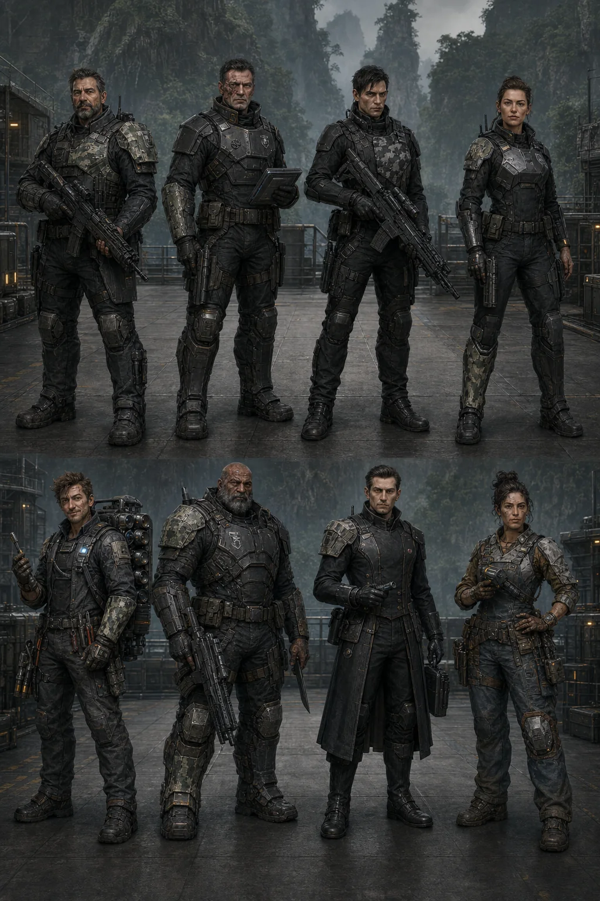
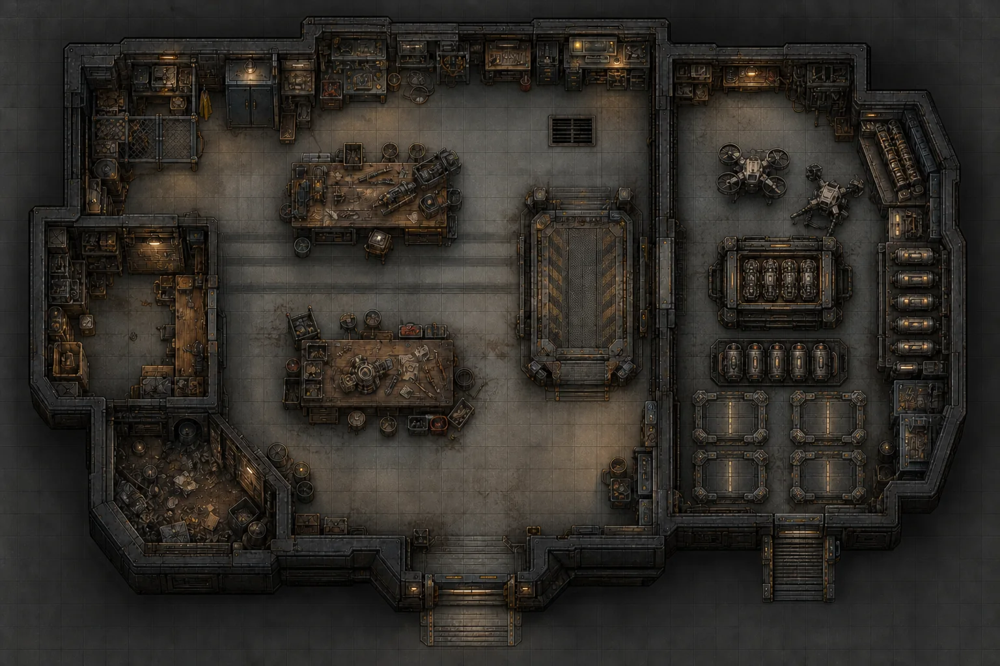
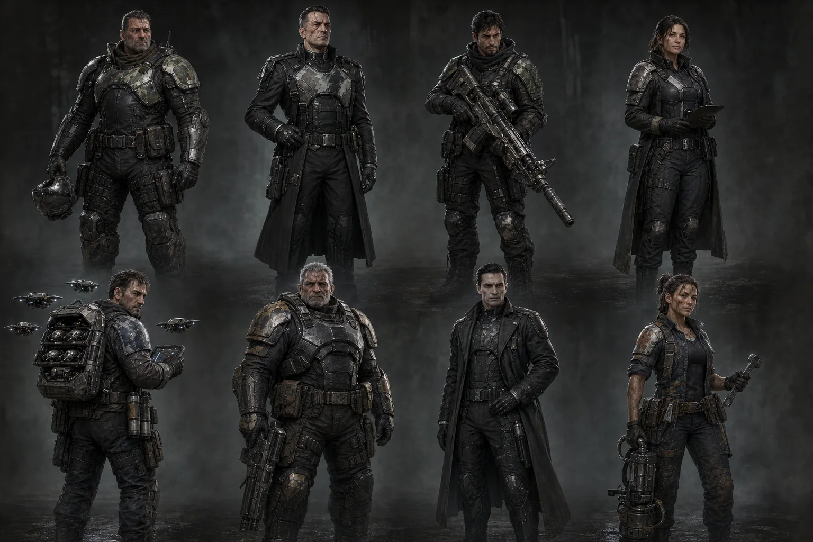
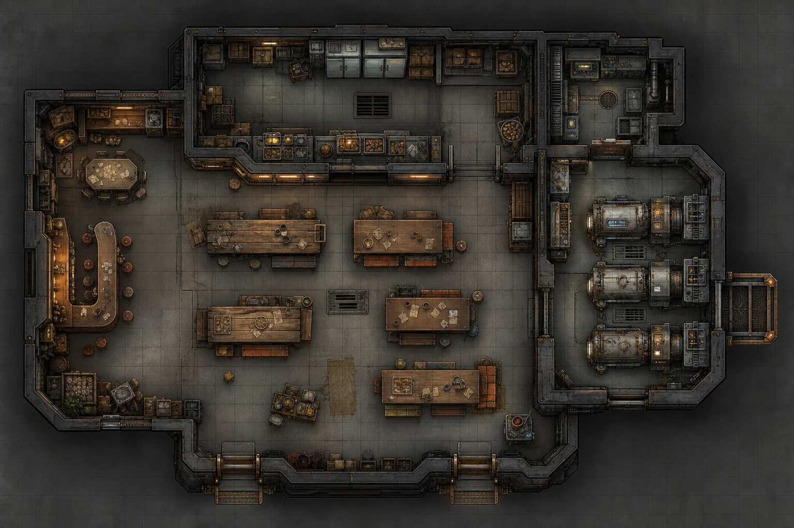
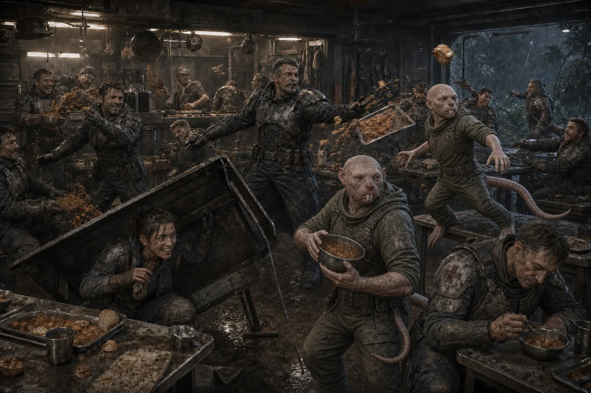
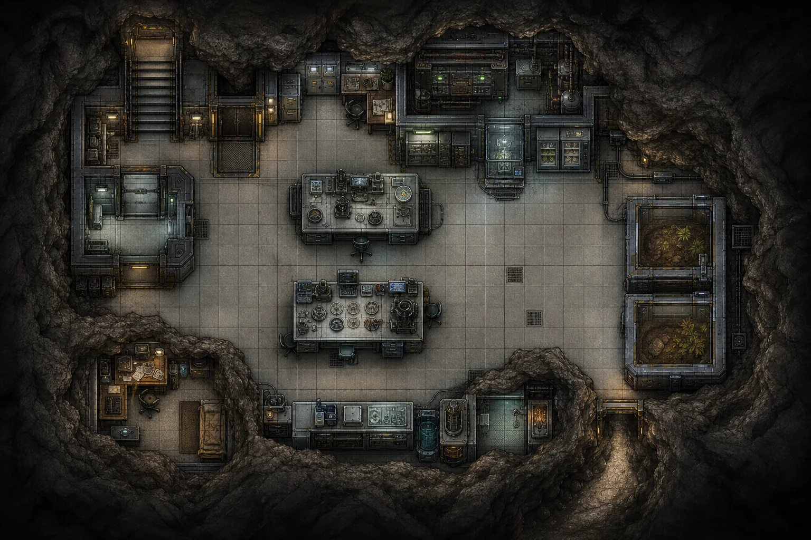
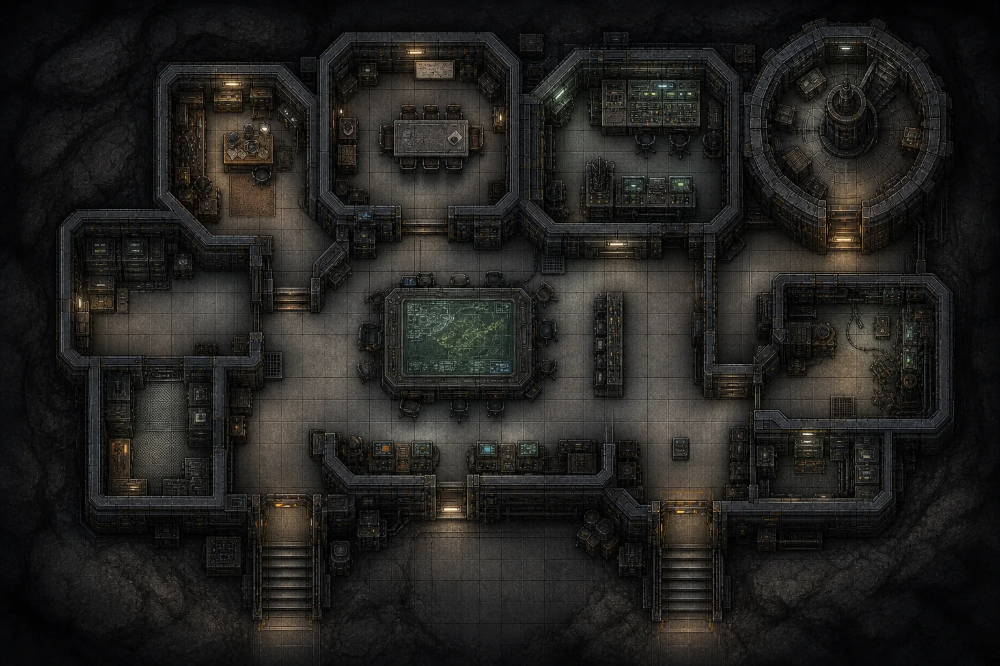

MÓDULO 1 — PUESTO FRONTERIZO
Estado editorial: Módulo completo pendiente de playtest, corrección y maquetación.
Diseñada originalmente para 5 personajes, con nivel medio de equipamiento. Dura un mínimo de dos o tres meses de ficción, repartidos en tantas sesiones como el grupo necesite — no es una aventura de una tarde. Un grupo más grande o más pequeño cambia el riesgo real y la necesidad de aliados, preparación y retirada — no el tamaño de las fuerzas enemigas, que son fijas (ver Nota para quien dirige). Los PJ deben pertenecer a TecnoStealer o trabajar habitualmente para ella.
Mapas para los jugadores — puede compartirse en mesa sin problema.
Ayudas de dirección — pensadas para consultar en mesa sin releer el módulo completo. Contienen información exclusiva del Narrador: no las compartas con los jugadores.
Nota para quien dirige
Las corporaciones propuestas —TecnoStealer, Serpent, Chafry, Primus, Workhouse, las Pseudo-Arkanitas— pueden sustituirse por otras que encajen mejor en una campaña particular. Si se sustituyen, deben conservarse sus funciones narrativas, sus recursos, sus rivalidades y sus objetivos: alguien tiene que seguir queriendo desacreditar a un infiltrado, alguien tiene que seguir presionando por cuotas de extracción, alguien tiene que seguir vigilando desde fuera del mando.
Para describir armaduras, equipo y espacios de TecnoStealer con algo más de detalle que el Blindaje de cada ficha —negro y plateado, paneles recuperados integrados con cuidado, reparaciones visibles como mérito—, existe una referencia aparte de identidad visual corporativa. Es un recurso opcional para quien lo quiera; el módulo funciona igual sin él.
La configuración publicada está equilibrada por relaciones, información y disponibilidad de recursos — no ajustando automáticamente el número de enemigos. No escales las fuerzas de las máquinas ni de Serpent según cuántos PJ haya en mesa. Las cifras de este módulo son fijas (ver cada Acto). Si el grupo es pequeño o va mal equipado, la aventura se vuelve más peligrosa de verdad, no más fácil por decreto — para eso están la preparación, los aliados y la retirada como opciones válidas.
Cómo usar este módulo — el mundo no espera
Los PNJ de Puesto Fronterizo actúan con su propia información, sus propios recursos, su propia personalidad y su propio tiempo. La conspiración contra Pitt ya está en marcha antes de que los personajes lleguen. El ataque a Punta de Lanza B ya está preparado antes de que termine el Acto III. Los personajes no activan la existencia de ninguna de las dos cosas.
Lo que sí cambian sus decisiones:
- cuándo descubren algo, y en qué orden;
- quién confía en ellos y quién no;
- qué recursos conservan al llegar a cada Acto;
- qué pruebas siguen existiendo cuando hace falta usarlas;
- quién sobrevive al asedio y quién no;
- cómo de preparado está el Puesto para Punta de Lanza B;
- el destino final de Pitt;
- el destino final de Corliss;
- cuándo y cómo llega la ayuda de TecnoStealer;
- las consecuencias concretas del asedio, más allá de "se gana o se pierde".
Cada Acto de este módulo está organizado con la misma estructura de notas, para que dirigir no exija memorizar toda la trama de una sentada:
- Hechos ya ocurridos — lo que es verdad antes de que empiece la escena.
- Planes en marcha — lo que los PNJ relevantes están haciendo aunque nadie los mire.
- Cronología privada — cuándo ocurre cada cosa si nadie interfiere (ver más abajo la cronología completa).
- Conocimiento de cada PNJ — qué sabe, qué cree, qué ignora (ver Reparto y relaciones).
- Señales perceptibles — lo que un grupo atento puede notar sin que se lo den masticado.
- Puntos de intervención — momentos concretos donde una decisión de los PJ cambia algo real.
- Consecuencias si nadie actúa — qué pasa igualmente, sin heroísmo de por medio.
Reparto y relaciones
Para cada PNJ importante: primera impresión, qué sabe, qué cree equivocadamente, qué quiere, a quién protege, de quién desconfía, qué ofrece, qué le molesta, qué hace si nadie interviene, qué hace durante el asedio, qué puede cambiar su opinión, y sus relaciones concretas con otros PNJ. No deberías tener que adivinar cómo reacciona ninguno de ellos.

Lámina conceptual del reparto principal — no un retrato exacto y contractual de cada PNJ.
Capitán Broile — mando militar del Puesto
Primera impresión: veterano curtido, se mueve poco pero decide rápido; trato profesional, ni cálido ni suspicaz por defecto.
Qué sabe: el estado real de la guarnición; las cuotas que le exige Varice; que alguien filtró la posición del campamento anterior; que la evidencia contra Pitt "encaja demasiado bien" para su gusto, aunque no sepa articular por qué le incomoda.
Qué cree equivocadamente: que la lealtad de Corliss es sincera y que su ascenso reciente es mérito puro.
Qué quiere: conservar personal vivo y posiciones defendibles. No perder más gente de la que ya ha perdido.
A quién protege: a la guarnición en conjunto, en especial a sus sargentos veteranos (Hierro, Misty Junker).
De quién desconfía: de Varice cuando antepone la cuota al riesgo; de la culpabilidad de Pitt, sin tener con qué sostener la duda.
Qué ofrece: acceso al organigrama, autorización para investigar dentro del Puesto, apoyo logístico limitado.
Qué le molesta: arriesgar vidas por una cuota; que le oculten información; la prisa sin justificación táctica.
Qué hace si nadie interviene: deja que el proceso oficial contra Pitt siga su curso — no tiene con qué cuestionarlo a fondo, solo una incomodidad que no sabe nombrar.
Qué hace durante el asedio de Punta de Lanza B: permanece en el Puesto Fronterizo principal — Punta B está bajo mando de Corliss, no del suyo. Coordina desde allí la respuesta de TecnoStealer, gestiona comunicaciones y refuerzos, y decide qué recursos del Puesto principal puede permitirse enviar. Solo se desplaza en persona a Punta B si algo ha cambiado antes su destino de forma expresa (por ejemplo, si releva a Corliss o si el propio Puesto principal deja de estar en peligro inmediato).
Qué puede cambiar su opinión: pruebas concretas, nunca sospechas sueltas; el testimonio directo de Shepard.
Relaciones: fricción funcional y constante con Varice (ver más abajo); respeta a Pitt como combatiente; confía en Hierro; correcto pero distante con Corliss, a quien nunca ha tenido motivo real para cuestionar.
Comandante Varice — autoridad corporativa de TecnoStealer en la zona
Primera impresión: cínico, cicatrices de radiación, exige resultados sin rodeos.
Qué sabe: que la cuota de extracción de este ciclo no se cubre; que hay más de una corporación con intereses cerca del Puesto; del escándalo de Pitt, solo de oídas.
Qué cree equivocadamente: que el asunto de Pitt es ruido interno de TS sin relación con sus cuotas — no conecta a Corliss ni a Serpent hasta que resulte evidente.
Qué quiere: cubrir la cuota del ciclo, quedar bien ante sus superiores, mantener el flujo de artefactos y muestras hacia TS.
A quién protege: a nadie en particular. Protege el resultado, no a las personas.
De quién desconfía: de Broile cuando antepone la prudencia a la cuota; de cualquiera que le huela a excusa.
Qué ofrece: contratos rápidos, acceso a la logística TS (talleres, recuperación tecnológica, piezas que no se consiguen en otro sitio), autorización para operaciones de mayor riesgo si prometen resultado.
Qué le molesta: las excusas, los retrasos, que le renegocien un trato ya cerrado.
Qué hace si nadie interviene: presiona a Broile para desviar patrullas de la investigación a la extracción — no impide investigar, pero lo hace más lento y más caro en tiempo.
Qué hace durante el asedio: prioriza salvar artefactos y registros de valor sobre la posición en sí; puede pedir directamente a los PJ que recuperen material antes que a gente, un dilema real, no retórico.
Qué puede cambiar su opinión: pérdidas que afecten a su propia cuota o a su posición ante TS; una amenaza a su propio pellejo.
Relaciones: fricción funcional con Broile —Broile quiere conservar personal y posiciones defendibles; Varice acepta riesgos mayores para cumplir cuotas y conseguir artefactos o muestras. Broile puede discutir o rechazar una orden tácticamente inviable; Varice puede presionarlo mediante suministros, refuerzos, evaluaciones o prioridades corporativas. Ninguno de los dos es el villano de esa fricción — ambos tienen razón según la situación, y los personajes pueden acudir a uno u otro y recibir respuestas distintas. Corliss, consciente de esa división administrativa, la usa a su favor cuando le conviene. Varice no dirige patrullas ni sustituye a Broile en el campo; Broile no puede ignorar que reemplazos, recursos y prioridades corporativas dependen de Varice.
Teniente A. S. Pitt
Primera impresión: agrio, seco, no busca caer bien.
Qué sabe: su propia misión real para Ladino (accesos clandestinos a sistemas concretos, nunca la posición del campamento atacado); sospecha, sin certeza al principio, que alguien ha usado su identidad operativa de Serpent sin su consentimiento.
Qué cree equivocadamente: durante buena parte del módulo no sabe que es Corliss quien lo usa — si sospecha de alguien, sospecha mal.
Qué quiere: completar la misión de Ladino sin que el resto de TS lo sepa, y sobrevivir al escándalo sin quemar su tapadera.
A quién protege: la misión de Ladino, por encima de sí mismo; en el fondo, también su propia reputación de espía perfecto.
De quién desconfía: de casi todos, por oficio — en especial de quien pregunta con demasiada precisión.
Qué ofrece: nada gratis, pero puede negociar información a cambio de discreción o de ayuda concreta.
Qué le molesta: que le presupongan culpable sin pruebas; que le hagan perder tiempo con procedimiento cuando el reloj corre.
Qué hace si nadie interviene: se cierra en banda. No colabora activamente en su propia defensa —hacerlo comprometería su tapadera— mientras busca una salida por su cuenta.
Qué hace durante el asedio: combate con eficacia brutal; si lo capturan, no delata la misión de Ladino aunque le cueste caro.
Qué puede cambiar su opinión: que alguien demuestre entender su situación sin exigirle exponer su tapadera.
Relaciones: recela de Corliss sin saber todavía por qué; Hierro lo respeta como combatiente; Broile lo trata con neutralidad profesional, no con sospecha activa.
Teniente Corliss Zalaoa (luego Capitana Corliss)
Primera impresión: cálida, ayuda de verdad, cae bien con facilidad.
Qué sabe: toda la operación, de principio a fin — su identidad real, el uso de la identidad de Pitt, cómo transmitió la información, qué fragmentos quedaron sin borrar en dron, repetidor y antena.
Qué cree equivocadamente: que su extracción, si algo sale mal, será limpia y rápida. No sabe que Serpent está dispuesta a sacrificarla si hace falta.
Qué quiere: completar su misión, sostener la culpabilidad de Pitt, salir de Monstruoplantas con vida y sin ser descubierta.
A quién protege: a sí misma, primero; en segundo lugar, y de forma genuina, al PJ con quien desarrolla el vínculo humano (ver más abajo).
De quién desconfía: de Capricornio en cuanto aparece —no puede controlarlo—; de cualquier PJ demasiado perspicaz.
Qué ofrece: ayuda real y cotidiana, amistad genuina, información útil, siempre calculada para ganarse confianza.
Qué le molesta: perder el control de una situación que había preparado con cuidado.
Qué hace si nadie interviene: consolida la culpabilidad de Pitt, gestiona su propio ascenso a Capitana, prepara la reapertura de Punta de Lanza B.
Qué hace durante el asedio: sigue su escalada de preferencias (ver Acto III) y activa su plan de fuga en la cápsula.
Qué puede cambiar su opinión: el vínculo humano con el PJ — puede dudar, advertir, u ofrecerle un sitio en la cápsula. Nada de esto la redime automáticamente.
Relaciones: figura en el organigrama al mismo nivel que Pitt pero no coordina con él; Shepard y Hierro le reportan sobre el papel, sin lealtad personal; Capricornio es la amenaza que no controla; Varice, sin saberlo, le sirve de palanca administrativa.
Marcus Shepard — Maestro de Drones


Lámina conceptual de Shepard y sus drones — no un retrato contractual exacto.
Primera impresión: técnico competente, orgulloso de sus drones, rivaliza en broma con Hierro y con la impresora averiada.
Qué sabe: rastros técnicos que no cuadran —un dron y un repetidor usados fuera de su patrón normal— antes de tener pruebas cerradas.
Qué cree equivocadamente: al principio puede sospechar de Pitt igual que los demás, antes de notar las anomalías técnicas.
Qué quiere: proteger el Puesto con sus drones; que se reconozca su trabajo; la verdad técnica por encima del rumor.
A quién protege: a su gente, a sus drones (con cariño real) y a quien se gane su confianza técnica.
De quién desconfía: de las conclusiones rápidas que no han revisado los registros.
Qué ofrece: sus hallazgos técnicos, en privado, a quien demuestre que investiga en serio.
Qué le molesta: que le pidan silenciar lo que ha encontrado.
Qué hace si nadie interviene: sigue obedeciendo la cadena de mando —reporta a Corliss— mientras no pueda demostrar nada; comparte sus dudas solo en confianza y en lugares seguros. Si los PJ no le creen o desestiman lo que trae: no se rinde ni fuerza la cuestión — sigue revisando registros por su cuenta, cumple sus funciones con normalidad, y solo vuelve a compartir algo cuando encuentra un hallazgo nuevo y en condiciones seguras. No abandona la pista ni resuelve la trama por sí solo.
Qué hace durante el asedio: despliega sus enjambres y es clave en la defensa técnica; su presencia enseña Maestro de Drones jugando, no exponiendo.
Qué puede cambiar su opinión: pruebas técnicas adicionales que los PJ le acerquen.
Relaciones: lealtad institucional a TecnoStealer, no personal a Corliss; rivalidad afectuosa con Hierro; respeta a Broile. Es leal a TecnoStealer, no a Corliss — y eso acaba pesando.
Nicolauss «Hierro» Koen
Primera impresión: intimidante, exagerado, grita para enseñar, no para humillar.
Qué sabe: cómo se mueve la moral de la tropa; cada rincón del Puesto; rumores de pasillo sobre Pitt y Corliss.
Qué cree equivocadamente: confía en la cadena de mando por encima de su propio instinto — tarda en admitir que algo no cuadra.
Qué quiere: soldados vivos y bien entrenados; ganar, de una vez, la guerra del rancho contra la impresora averiada.
A quién protege: a sus reclutas, a Pitt (como combatiente al que respeta), a la moral del Puesto.
De quién desconfía: de quien no ha sudado nunca en el barro con él.
Qué ofrece: entrenamiento, opciones tácticas, un empujón moral cuando hace falta.
Qué le molesta: la teoría sin práctica, los drones de Shepard "robándole protagonismo", la impresora rota.
Qué hace si nadie interviene: cree en la cadena de mando, pero prepara alternativas por si acaso — reúne extraoficialmente apoyos por si Pitt necesita ayuda algún día.
Qué hace durante el asedio: organiza personal y defensas; presenta opciones a los PJ, nunca decide por ellos.
Qué puede cambiar su opinión: ver con sus propios ojos que el sistema falla a uno de los suyos.
Relaciones: rivalidad afectuosa con Shepard; respeto sincero por Pitt; lealtad formal a Corliss (es uno de sus sargentos) con un instinto que empieza, poco a poco, a dudar de ella.
Misty Junker — Sargento 1º de Corliss
Primera impresión: eficiente, discreta, la que de verdad hace funcionar la sección de Corliss.
Qué sabe: la logística diaria de su sección; quién falta a su turno; quién ha estado raro últimamente.
Qué quiere: que su sección funcione sin sobresaltos.
Qué hace si nadie interviene: sigue las órdenes de Corliss sin cuestionarlas — es su mano derecha eficaz, sin saber a quién sirve en realidad.
Relaciones: leal a Corliss por respeto profesional, no por afecto; coordina el día a día con Hierro y Shepard.
Niebla
Primera impresión: una niña. No un arma, no un enigma que resolver.
Qué sabe: quién ha sido amable con ella; dónde se esconden las máquinas cerca de la torre; poco del panorama político del Puesto.
Qué quiere: estar a salvo, estar con Valiente y Snacker, que no le hagan más preguntas de las necesarias.
A quién protege: a sí misma y a sus dos Nakel; sin saberlo, protegió también a todo el campamento manteniendo a raya a las máquinas durante el ataque inicial.
De quién desconfía: de desconocidos armados que se acercan deprisa.
Qué ofrece: nada que deba pedírsele — no es un recurso que activar.
Qué le molesta: que la traten como un arma o como un misterio que resolver, en vez de como lo que es.
Qué hace si nadie interviene: se mantiene oculta con Valiente y Snacker. Si el peligro es demasiado, usa su marca de teleportación y desaparece de la escena — sin garantía de a dónde va ni de cuándo vuelve a aparecer en esta historia.
Qué puede cambiar su opinión: trato paciente y honesto, nunca promesas vacías.
Nota mecánica: no representes sus capacidades mediante profesiones ni las infles para justificar su importancia narrativa (ver Trayectorias profesionales).
Valiente y Snacker — los dos Nakel de Niebla
Aparecen casi siempre juntos y comparten la mayoría de estos rasgos.
Primera impresión: protectores fieros, silenciosos hasta que hace falta dejar de serlo.
Qué saben: el terreno alrededor de la torre; las rutinas de las máquinas atacantes; poco de la política interna del Puesto.
Qué quieren: proteger a Niebla. Valiente, además, honrar a la familia de Droides libres que lo crió.
A quién protegen: a Niebla, y el uno al otro.
De quién desconfían: de cualquiera que se acerque a Niebla con prisa o con armas a la vista.
Qué ofrecen: guía por el terreno, información de primera mano sobre el ataque al campamento.
Qué les molesta: que ignoren a Niebla o la traten como objeto de estudio.
Qué hacen si nadie interviene: mantienen la posición en la torre tanto como pueden.
Qué hacen durante el asedio: defienden activamente, priorizando siempre a Niebla sobre cualquier posición.
Qué puede cambiar su opinión: que alguien demuestre, con hechos y no con palabras, que quiere proteger a Niebla y no usarla.
Nota de presentación: son Nakel — llamarlos "Hombres Rata" es cosa de quien no los conoce, no el nombre que ellos usan entre sí. Úsalo como apelativo ajeno cuando un PNJ que no los conoce hable de ellos, no como nombre por defecto.
Ícaro: la rata voladora de Valiente (INT 20). Acompaña, explora y hace de mensajero a corta distancia; no combate.
Inquisidor de Capricornio
Primera impresión: formal, metódico; la máscara no oculta la curiosidad genuina.
Qué sabe: los mismos fragmentos de prueba que reuniría cualquier investigador competente. Puede haber recibido un empujón no confirmado de algún miembro del Triunvirato — el módulo no confirma quién ni si ocurrió realmente.
Qué cree equivocadamente: durante buena parte de su investigación, que Pitt es probablemente culpable — las pruebas iniciales lo sostienen de buena fe.
Qué quiere: la verdad demostrable, no una conclusión rápida.
A quién protege: al procedimiento, no a ninguna persona en particular — lo que a veces protege a quien lo merece y a veces no.
De quién desconfía: de las pruebas "demasiado limpias". Cuando algo encaja perfectamente, mira dos veces.
Qué ofrece: una investigación independiente que ni Corliss ni Broile controlan; una salida legítima para quien colabore con honestidad.
Qué le molesta: que le oculten información o intenten manipular su conclusión de forma directa.
Qué hace si nadie interviene: avanza su investigación con sus propios medios —interviene las antenas, vigila, interroga— y llega a una conclusión con las pruebas que tenga en ese momento, sea o no la correcta.
Qué hace durante el asedio: mantiene su vigilancia discreta; puede intervenir si detecta a tiempo la implicación de Corliss, sin garantía de conseguirlo.
Qué puede cambiar su opinión: pruebas verificables. Nunca súplicas, nunca presión.
Relaciones: independiente de Corliss, que no puede controlarlo ni ordenarle una conclusión; puede colaborar con discreción si los PJ se ganan su confianza con hechos; su punto ciego —confiar demasiado en procedimientos rigurosos y pruebas bien preparadas— puede ser aprovechado por una manipulación cuidadosa. Con Broile: cooperación formal y respeto profesional — Broile acepta la investigación como parte legítima del procedimiento, aunque protege la operatividad del Puesto por encima de facilitarle el paso libre. Con Varice: colaboración útil pero incómoda — Varice no lo obstruye, pero lo considera una interferencia imprevisible sobre cuotas, plazos y autoridad corporativa, no un enemigo declarado. Con Shepard: fuente técnica valiosa — escucha sus dudas con atención, pero no las trata como prueba hasta que puedan sostenerse por sí solas.
El resto del organigrama
| Nombre | Bajo el mando de | Rasgo rápido |
|---|---|---|
| Sahyla Arduya | Sargento 1º, sección Pitt | Precisa, silenciosa, no repite una orden dos veces |
| Adal González | Sargento 1º, sección Pitt | Optimista pertinaz, la moral de la sección en persona |
| Luisiro | Sargento, sección Pitt | Joven, aprende rápido, admira a Pitt sin saber por qué exactamente |
| Leonella Grendel | Sargento, sección Pitt | Metódica, lleva la cuenta de todo el material de la sección |
| Alesandro | Sargento, sección Pitt | Bromista, el que más se ríe en la Guerra del Rancho |
| Agnes | Sargento, sección Pitt | Reservada, la más cercana a Hierro fuera de servicio |
Trayectorias profesionales
Usa la escala orientativa de una a diez profesiones (El Narrador) para construir y verificar a estos PNJ, no para inflarlos. El número de profesiones no concede PV, Blindaje, daño ni autoridad por sí mismo — cada ficha justifica sus cifras por separado.
| PNJ | Trayectoria | Tipo orientativo |
|---|---|---|
| Soldados rasos / auxiliares | 1–2 profesiones | Masilla / Personal corriente |
| Sargentos normales (Sahyla, Adal, Luisiro, Leonella, Alesandro, Agnes) | 2–3 — 2× Combatiente (Veterano) | Personal corriente / Competente |
| Misty Junker | 4 — 3× Combatiente (Oficial), 1× Técnico (Chapuzas) | Veterano |
| Nicolauss «Hierro» Koen | 6 — 4× Combatiente (rango General, ganado con los años), 2× Civil (Ciudadano) | Élite |
| Marcus Shepard | 6 — 3× Técnico (Ingeniero), 2× Combatiente (Veterano), 1× Civil (Civil) | Élite |
| Teniente A. S. Pitt | 7 — 2× Combatiente (Veterano), 3× Civil (Político), 2× Científico (Científico) | Figura notable |
| Teniente Corliss Zalaoa | 7 — 2× Combatiente (Veterano), 2× Técnico (Especialista), 3× Civil (Político) | Figura notable |
| Capitán Broile | 7 — 4× Combatiente (rango General), 3× Civil (Político) | Figura notable |
| Comandante Varice | 8 — 3× Combatiente (Oficial), 3× Civil (Político), 2× Científico (Científico) | Gran veterano |
| Inquisidor de Capricornio | 9 — 3× Combatiente (Oficial), 3× Científico (Doctor), 3× Civil (Político) | Autoridad excepcional |
| Valiente | 4 — 2× Combatiente (Veterano), 2× Técnico (Especialista, aptitud racial Nakel) | Veterano |
| Snacker | 2 — 1× Combatiente (Novato), 1× Técnico (Chapuzas) | Personal corriente |
| Niebla | — (no se representa con profesiones) | Excepción — capacidad propia, no formación |
Para Shepard, la trayectoria cumple el requisito de desbloqueo de Maestro de Drones (Técnico 2× o Combatiente 2×, más Programación o Liderazgo 50) sin necesidad de detallarlo más: su bolsa de REC Tecnológico ronda 55, cómodamente por encima del umbral.
Solo genera REC/POT completos para los PNJ que puedan participar repetidamente en investigación o combate (ver Fichas, al final del módulo). El resto de sargentos y auxiliares no necesitan ficha completa: la tabla de arriba y un rasgo distintivo bastan.
Cronología privada
Cuadro general — se puede comprimir o ampliar, pero conserva la causalidad entre filas.
| Momento | Qué ocurre si nadie interviene |
|---|---|
| Día 0 | Ataque al campamento avanzado. Vainas caen, la guarnición destruye una dotación completa, la segunda queda activa. |
| Días 1–2 | Los PJ reciben el encargo, viajan y reconocen la zona. |
| Día 3 | Regreso al Puesto Fronterizo con lo que hayan recuperado. |
| Semana 1 | Adaptación al Puesto: rutinas, primeras caras, primera cena. |
| Semanas 2–3 | Rutinas normales del Acto II; el rumor sobre Pitt empieza a circular en voz baja. |
| Semana 4 | Shepard detecta la anomalía del dron y el repetidor. |
| Semana 5 | Salen a la luz las credenciales de Pitt vinculadas al tráfico de mantenimiento. |
| Semana 6 | Aislamiento de Pitt: se le restringe el acceso y el movimiento. |
| Semana 7 | El caso llega a oídos de Capricornio, que abre su propia investigación. |
| Semana 8 | Resolución aparente del caso —con o sin la intervención de los PJ. |
| Semana 9 | Ascenso de Corliss; se anuncia la reapertura de Punta de Lanza B. |
| Semana 10 | Transmisión de Corliss desde las antenas y ataque de Serpent sobre Punta de Lanza B. |
Detalle de los momentos más determinantes:
Día 0 — Ataque al campamento
- Iniciador: fuerzas Serpent, con información filtrada por Corliss.
- Objetivo: destruir el campamento, eliminar testigos, borrar rastros de la infiltración de Pitt.
- Recursos: dos vainas de defensa (ver Acto I).
- Señales: ausencia de marcas de origen, registros consultados y parcialmente borrados.
- Resultado sin intervención: el campamento queda perdido; Niebla y sus dos Nakel resisten en la torre hasta que alguien los rescate o hasta agotar sus opciones.
- Alteraciones posibles: la rapidez o discreción de los PJ determina cuántos registros y supervivientes se recuperan.
- Reacción si fracasa (para Serpent): Serpent da el ataque por cumplido igualmente — su objetivo real (cortar el hilo hacia Corliss) no depende de que el campamento caiga del todo.
Semana 4 — Anomalía del dron
- Iniciador: Shepard, revisando registros de rutina.
- Objetivo (de Shepard): entender por qué un dron y un repetidor muestran un patrón de uso que no cuadra.
- Recursos: acceso a los registros técnicos del Puesto.
- Señales: un fragmento de tráfico de datos que no debería estar ahí.
- Resultado sin intervención: Shepard guarda sus dudas y las comparte solo en confianza (ver su ficha).
- Alteraciones posibles: si los PJ ya han mostrado interés genuino en investigar, Shepard puede acudir a ellos antes.
- Reacción si fracasa: si alguien descubre que Shepard investiga por su cuenta, Corliss puede intentar desviarlo con una tarea urgente en vez de confrontarlo.
Semana 7 — Llega Capricornio
- Iniciador: la propia reputación del caso, que ya ha llegado a oídos de TecnoStealer más allá del Puesto.
- Objetivo (de Capricornio): abrir una investigación independiente.
- Recursos: su propia autoridad, su equipo, su método.
- Señales: su llegada es pública y deliberadamente visible.
- Resultado sin intervención: concluye con las pruebas que tenga en la Semana 8, sea o no la conclusión correcta.
- Alteraciones posibles: la colaboración honesta de los PJ puede acelerar o corregir su investigación.
- Reacción si fracasa (para Corliss): si Capricornio empieza a acercarse demasiado, Corliss escala según su orden de preferencia (ver Acto III).
Semana 10 — Transmisión y ataque
- Iniciador: Corliss, obligada a transmitir desde las antenas.
- Objetivo: pasar a Serpent la información necesaria para el ataque a Punta de Lanza B.
- Recursos: las antenas del puesto —ya intervenidas por Capricornio.
- Señales: actividad inusual en las antenas, visible para quien vigile esa zona.
- Resultado sin intervención: la transmisión sale parcialmente interceptada; Serpent ataca con información incompleta pero suficiente (ver Acto IV).
- Alteraciones posibles: según cómo salga la transmisión —completa, interrumpida o alterada— cambia lo que Serpent sabe del emplazamiento.
- Reacción si fracasa (para Serpent): el ataque no se cancela; se ejecuta igual, con más incertidumbre y más margen de sorpresa para los defensores.
ACTO I — EL CAMPAMENTO ATACADO
Hechos ya ocurridos
El campamento avanzado —el enclave principal antes de que existiera el Puesto Fronterizo tal y como está hoy— dejó de comunicarse hace tres días. Cayeron sobre él dos vainas sin marcas. La guarnición del campamento logró destruir la dotación de la primera vaina antes de caer; la segunda vaina quedó perfectamente establecida y su dotación sigue activa cuando llegan los personajes.
Objetivo real del ataque (información exclusiva del Narrador). El campamento conservaba registros parciales de movimientos, comunicaciones y consultas que, cruzados con cuidado, podían demostrar que el patrón de accesos de Pitt no coincidía con el patrón realmente usado para filtrar la posición —es decir, contenían la prueba de que Corliss, no Pitt, era la responsable—. Serpent quería destruir esos registros y, de paso, recuperar cualquier información que reforzara el montaje contra Pitt. Las máquinas debían además eliminar a cualquier testigo capaz de describir el ataque o la voz que lo dirigió. Por último, el ataque tenía una función política: producir una pérdida real y visible hacía creíble, ante el resto de TecnoStealer, que alguien había filtrado la posición — y ese "alguien" ya tenía un candidato preparado. Las máquinas no saquearon al azar: buscaban esos registros concretos, destruyeron las comunicaciones y eliminaron testigos siguiendo ese objetivo. En la base ya no queda casi nada de valor evidente —necrochips y combustible sin recoger, el resto robado, comido por la jungla o destruido—, pero sí quedan fragmentos: registros parcialmente borrados, un sistema de comunicaciones intacto en uno de los Droides del campamento, y pruebas que apuntan, todavía de forma incompleta, a la traición de un oficial del Puesto Fronterizo. Los personajes pueden llegar a recuperar solo fragmentos de todo esto — el Narrador conoce el objetivo completo desde el principio, aunque el grupo nunca lo reconstruya del todo.
Por qué lo que sobrevive apunta contra Pitt. No es casualidad. Lo que las máquinas priorizaron destruir fue precisamente lo exculpatorio —los registros que habrían demostrado que el patrón de accesos de Pitt no coincidía con el usado para filtrar la posición—, y lo que dejaron o generaron de paso fue una pérdida creíble y unos restos que, leídos sin ese contraste, refuerzan el montaje. Lo que libraría a Pitt se pierde por diseño; lo que lo incrimina sobrevive por diseño. Las "Pistas iniciales" de más abajo son justo ese resto sesgado — no un reflejo neutral de lo ocurrido.
En una torre del complejo que las máquinas no han tomado se ocultan Niebla y sus dos Nakel, Valiente y Snacker. Niebla mantiene a raya a las tropas robóticas desde allí; los personajes no sabrán que existe hasta que la pongan a salvo. Si no lo consiguen, usará su marca de teleportación de emergencia y desaparecerá de la escena — activarla tiene un coste real en PV que la deja al menos Herida (ver Fichas, más abajo, para el efecto exacto).
Planes en marcha
Las máquinas de la segunda vaina siguen ejecutando su misión: consultar y borrar registros, localizar y eliminar cualquier testigo humano superviviente, y mantener la posición hasta agotar su cometido o ser destruidas. No tienen orden de retirarse ni de perseguir más allá del campamento.
Misión inicial
El Capitán Broile encarga a los personajes investigar por qué el campamento avanzado ha dejado de comunicarse y recuperar, si es posible, supervivientes, registros, material sensible e información sobre los atacantes. El Comandante Varice, por su cuenta, deja claro que cualquier tecnología o muestra recuperable interesa a su cuota — una petición añadida, no una orden que sustituya a la de Broile.
En este planeta las comunicaciones de largo alcance son difíciles: un extraño núcleo radiactivo interfiere hasta con los satélites. Los envían en jet-packs, con módulos de salto intraorbital para el viaje de ida — 20 km a recorrer.
Jet-pack (nota de reglas): mochilas de 5 asaltos de viaje, 4 km/asalto + 1 km por éxito. Para aterrizar hace falta un éxito; con menos, tirada de daño (sin protección de blindaje) igual a los éxitos que falten. Se puede despegar desde el suelo, pero gasta 1 asalto de viaje.
A su llegada —o antes, con una tirada de Alerta— los personajes ven que en el emplazamiento han caído las dos vainas descritas arriba: la primera destruida, la segunda perfectamente establecida.
Fuerza fija — segunda vaina (no escalar por número de jugadores)
| Unidad | Cifra |
|---|---|
| Sierpe | 1 |
| Bots artillería ligera | 2 |
| Droides C30 | 4 |
| Total | 7 máquinas |
1 Sierpe — Blindaje 4, Melé 70% (eléctrico), Daño 5, Pen 2, PV 20.
2 Bots artillería ligera — Blindaje 5, Distancia 50%, Daño 10, Pen 2, PV 20.
4 Droides C30 — Blindaje 2, Distancia 40%, Daño 3, Cadencia 3 (ráfaga, +1 éxito adicional); puede usar Fuego repartido si asigna al menos 25 puntos de Distancia a cada objetivo, PV 12.
Son máquinas, no organismos: su PV es un valor único, no una progresión Sano/Herido/Tullido — no necesitan esa terminología orgánica. Con solo 7 máquinas repartidas en tres tipos distintos, no suele haber cinco unidades homogéneas del mismo tipo para aplicar Ataque en grupo (Mecánicas del Sistema, exige unidades homogéneas — ver el ejemplo detallado en Acto IV, Fase 4) — resuelve normalmente cada máquina por separado; solo agrúpalas si, por la escena, llegan a coincidir cinco C30 o más en una posición compatible.
Qué pueden hacer los personajes
Combatir, reconocer el terreno antes de decidir, infiltrarse, rescatar supervivientes, recuperar registros, reparar las comunicaciones, seguir rastros, retirarse y pedir refuerzos, o idear cualquier otra solución razonable. Ninguna de estas opciones es la "correcta" — la fuerza fija de siete máquinas no se reduce ni se multiplica según lo que decidan; solo cambia cómo de caro o barato les sale conseguir lo que buscan.
Niebla y los Nakel
Valiente y Snacker son Nakel — llamarlos "Hombres Rata" es cosa de quien no los conoce (ver Reparto y relaciones para su ficha de relación completa). Han sostenido la torre desde el ataque, sin saber cuánto más podrán aguantar. Niebla:
- es una niña excepcional, no un detector automático de culpables;
- mantiene temporalmente a raya a las máquinas cercanas a la torre;
- posee una marca de teleportación de emergencia: la inscripción no se destruye ni desaparece al usarla, y con su calidad básica puede volver a activarse pasadas 24 horas — pero cada activación paga 12 PV como daño real y, con sus PV base, la deja al menos Herida (ver Fichas para el cálculo completo);
- sigue siendo una niña aunque tenga capacidades extraordinarias — trátala como tal en la mesa.
Si los personajes llegan hasta la torre y consiguen que confíen en ellos, Valiente e Ícaro pueden guiarlos por el resto del campamento; si no, la situación se resuelve como decida el Narrador según lo que hayan hecho hasta entonces (rescate, retirada de Niebla por su cuenta, o algo peor).
Primer momento humano
En algún punto del reconocimiento, los personajes encuentran a un grupo de supervivientes encerrados en un refugio junto a una impresora alimentaria averiada que no deja de producir la misma sopa o pasta, sin parar, desde que empezó el ataque. La primera preocupación que expresan en voz alta puede no ser el peligro que acaban de vivir, sino cómo apagar la maldita máquina. Juega esta escena para aliviar la tensión y para mostrar, de entrada, que el campamento era un lugar vivido de verdad — no solo un escenario de combate.
Pistas iniciales
No presentes todavía a Pitt como culpable demostrado — estas pistas apuntan en su dirección sin cerrarla.
| Pista | Qué indica |
|---|---|
| Ausencia de marcas en las vainas | Alguien invirtió deliberadamente en negar la procedencia del ataque |
| Registros parcialmente borrados | Búsqueda de información concreta, no saqueo al azar |
| Consultas a sistemas específicos | Las máquinas buscaban algo, no todo |
| Fragmentos de mantenimiento | Compatibles con tráfico rutinario enviado desde el propio Puesto Fronterizo |
| Identidad operativa incompleta | Un fragmento roza una identidad que podría vincularse a Pitt, sin confirmarlo |
| Posible testimonio filtrado | Un superviviente cree haber oído una voz humana durante el ataque, aunque no está seguro |
ACTO II — VIDA EN EL PUESTO FRONTERIZO
Hechos ya ocurridos
Los personajes ya están instalados en el Puesto Fronterizo: un bunker-castillo en lo alto de la Pared Calcárea, muy pequeño —media hectárea, la mitad de un campo de fútbol—, agarrado a los acantilados que dan nombre a la región (ver DLC Monstruoplantas, Geografía y regiones). El rumor sobre Pitt circula ya en voz baja entre la tropa; nadie lo dice a la cara todavía.
Duración y forma de dirigirlo
Este Acto cubre un mínimo de dos meses de convivencia potencial. No hace falta escribir una cronología día a día — usa las escenas de más abajo como piezas sueltas y monta con ellas tantas sesiones como el grupo necesite. Cada periodo de tiempo que decidas jugar puede contener, sin que hagan falta los cuatro a la vez:
- una misión o trabajo concreto;
- una escena cotidiana;
- una pista sobre la trama de Pitt y Corliss;
- un cambio visible en el Puesto o en la jungla que lo rodea.
Rutinas — banco de trabajos
Usa esta lista como generador de escenas, no como lista de tareas obligatorias:
Patrullas del perímetro · escolta de científicos al campo · recogida de muestras · reparación de torres · mantenimiento de impresoras · defensa del perímetro · apertura de rutas · entrenamiento con Hierro · turnos de enfermería · gestión de suministros · exploración de ruinas cercanas · búsqueda de personas perdidas · operaciones corporativas para Varice o para otra corporación presente · comercio y descanso durante la apertura semanal del portal.
Para fauna, flora, encuentros de jungla y ganchos locales, el DLC Monstruoplantas es cantera directa: sus tablas de encuentro de la Pared Calcárea, sus criaturas y sus ganchos iniciales encajan sin fricción con cualquiera de estos trabajos.
El Puesto está vivo
Muestra estos elementos con regularidad, sin necesidad de anunciarlos como escena aparte:
- la jungla avanza uno o dos metros durante algunas noches; alguien tiene que despejarla cada pocos días;
- estructuras impresas con materiales locales, nunca del todo terminadas;
- torres, talleres, habitaciones, laboratorio y comedor, todos algo improvisados;
- científicos, soldados y personal auxiliar con sus propias rutinas, visibles de fondo;
- reemplazos que llegan y ausencias que no se explican del todo;
- escasez puntual y precios que suben y bajan según lo que traiga el portal esa semana;
- motes, amistades, objetos acumulados y reparaciones improvisadas que le dan personalidad al lugar.
Niebla y los Nakel durante los dos meses
Por defecto, Niebla, Valiente y Snacker permanecen en el Puesto durante los dos o tres meses del Acto II, alojados en una zona relativamente tranquila bajo la protección práctica de Hierro — no de un servicio oficial de tutela, sino de la misma manera informal en que él cuida de su gente. Participan con naturalidad en rutinas y escenas cotidianas: pueden aparecer en la Guerra del Rancho, en tareas menores, en conversaciones de pasillo, en momentos de descanso o en pequeños incidentes sin peso narrativo propio. No son mascotas ni decoración de fondo — el Narrador puede usarlos para mantener la continuidad humana con el Acto I, dejando que alguien pregunte por ellos, les ofrezca algo, o simplemente los vea de lejos en su vida diaria. Esto no abre una subtrama obligatoria: es solo la situación por defecto si nadie decide lo contrario.
Vecinos corporativos
El Puesto no es solo TecnoStealer. Otras corporaciones tienen presencia real aquí, y son un escaparate útil de política corporativa sin que ninguna de ellas tenga que tomar el centro de la trama de Pitt y Corliss. Sus fichas completas están en DLC Monstruoplantas, Facciones y fuerzas presentes — no las repitas aquí, solo su función en el día a día del Puesto:
| Quién | Presencia en el Puesto | Gancho rápido |
|---|---|---|
| Dra. Sonya Kess (Chafry) | Dirige un laboratorio en una caverna bajo el Puesto | Necesita muestras de las criaturas locales; puede pedir ayuda a los PJ o negarles el paso, según cómo la traten |
| Kemar Vall (Serpent) | Intermediario de información en la cantina | Una célula de Serpent completamente distinta de la de Corliss — no sabe nada de su operación, y eso es jugable si los PJ intentan atar cabos donde no los hay |
| Maestro de Portal Talwen (Conclave) | Custodia el portal semanal | Su silencio es más inquietante que sus palabras; puede advertir de algo que ha visto cruzar sin explicarlo del todo |
| Capitán Ash (Pseudo-Arkanitas) | Célula rival que opera cerca, no dentro del Puesto | Compite por los mismos hallazgos que Varice quiere para su cuota |
| Teniente Harkon (Primus) | Patrulla la zona, contacto ocasional | Ofrece protocolo, protección y roce con la disciplina de Primus |
| Capataz Grim (Workhouse) | Contingente contratado, presente según contrato vigente | Mano de obra prestada, información de pasillo sobre otros contratos de la zona |
Cualquiera de ellos puede protagonizar una escena de rutina o un gancho lateral sin tocar la trama central — precisamente lo que hace que el Puesto se sienta como un lugar real y no como el escenario de una sola historia.
Montaje de los dos meses
Herramienta para construir varias semanas de convivencia sin escribir un calendario día a día. Rellena una fila por cada periodo que decidas jugar —una fila puede ser una sesión entera o solo diez minutos de mesa—; no hace falta rellenar las seis columnas cada vez.
| Periodo | Misión o trabajo | Escena cotidiana | Cambio visible | Pista posible | Relación que puede avanzar |
|---|---|---|---|---|---|
| (ejemplo) Semana 2 | Escolta a un equipo de Kess al Valle Central | — | La jungla ha cubierto la ruta de patrulla norte | — | Primer contacto informal con Shepard |
| (ejemplo) Semana 3 | — | Guerra del Rancho | Acceso nuevo a la zona de mantenimiento | — | Complicidad o fricción con Hierro |
| (ejemplo) Semana 4 | Reparar una torre de sensores | — | — | Shepard menciona la anomalía del dron | Shepard empieza a confiar |
| (ejemplo) Semana 6 | — | Trabajo científico con Kess | Precios suben, el portal trajo poco esta semana | Fragmento de las órdenes de patrulla | — |
No conviertas esta tabla en un calendario obligatorio. Es una plantilla para preparar sesiones, no una lista que haya que agotar entera. La cronología privada (más arriba) marca los momentos que sí tienen que ocurrir en un orden causal; todo lo demás es vida del Puesto, construida a tu ritmo — las escenas entre hitos que hacen que los dos meses se sientan vividos, no solo contados.
Tres formas de montar el Acto:
- Campaña corta dentro de la ficción — juega solo 3-4 periodos bien elegidos (la primera cena, una rutina con pista, la Guerra del Rancho, un salto de semanas) y da el resto por sobreentendido con un resumen breve entre escenas.
- Campaña desarrollada — juega la mayoría de las semanas de la cronología, alternando rutinas, las cinco escenas recomendadas y ganchos propios, dejando que las relaciones con los PNJ crezcan con calma.
- Inserción de aventuras propias — intercala contratos, ganchos de Monstruoplantas o material de tu propia mesa entre las semanas marcadas de la cronología privada, siempre que no desplacen los momentos causales (Semana 4, 5, 7, 9 y 10 en particular).
Cualquiera de las tres formas debe conservar la cronología causal confirmada: lo que ocurre en la Semana 4 depende de que hayan pasado las semanas anteriores, aunque no se hayan jugado todas en detalle.
Escenas recomendadas para construir la convivencia
Estas cinco escenas están pensadas para dar forma a los dos meses de convivencia. El Narrador puede sustituirlas por otras equivalentes si conservan su función — lo importante es lo que cada una aporta a la trama y al Puesto, no la escena exacta tal y como está escrita aquí. Ninguna necesita una tirada obligatoria para resolverse.
Llegada y primera cena

Referencia espacial de la vida diaria del Puesto — no un mapa táctico.
Situación inicial: los personajes llegan al Puesto por primera vez, recién terminado el Acto I, con lo que hayan conseguido recuperar del campamento.
Lugar: el patio de entrada y el comedor principal, en la cena de esa misma noche.
PNJ presentes: Broile, Varice, Corliss, Pitt, Shepard, Hierro, Niebla y sus dos Nakel (si fueron rescatados, todavía vistos de lejos), personal científico y auxiliar de fondo.
Qué quiere cada uno: Broile quiere evaluar a los personajes y su informe sin perder tiempo; Varice quiere saber qué han traído del campamento y reclamarlo para su cuota; Corliss quiere causar una buena impresión ayudando de verdad en algo concreto; Pitt solo quiere que lo dejen en paz; Shepard quiere presumir un poco de sus drones; Hierro quiere medir a la gente nueva, normalmente con una broma o un pequeño desafío.
Qué sucede si los PJ no intervienen: la cena sigue igualmente. Corliss se acerca a quien esté más aislado o incómodo y le resuelve algo pequeño y real; Varice reclama el material recuperado sin que nadie lo discuta; el rumor sobre Pitt sigue circulando en voz baja.
Formas previsibles de participar, sin agotarlas: entregar el informe del Acto I a Broile, negociar con Varice qué material recuperado se queda el grupo y qué se entrega, aceptar o rechazar la ayuda de Corliss, intentar hablar con Pitt, curiosear con los drones de Shepard, aceptar el desafío de Hierro.
Complicaciones posibles: Varice y Broile discuten delante de los personajes sobre el destino del material recuperado — una primera muestra visible de su fricción funcional; alguien pregunta directamente a los PJ qué opinan ya de Pitt.
Consecuencias inmediatas: los personajes se llevan una primera impresión de cada PNJ relevante; queda decidido, aunque sea de forma provisional, a quién entregan las pruebas o el material recuperado del Acto I.
Consecuencias o relaciones que pueden reaparecer después: la buena impresión de Corliss pesa después, cuando se descubra la verdad (Acto III); a quién entregaron el material afecta su relación posterior con Varice o con Broile.
Información o acceso que puede proporcionar: las pistas iniciales del Acto I quedan registradas oficialmente —o no— según a quién se las den.
Texto breve, solo si ayuda: "Buen trabajo ahí fuera. Sentaos, coméis primero, informáis después — nadie razona bien con hambre." (Broile, según llegan.)
La cena debe dejar, como mínimo: una primera amistad posible, una primera fricción, un rumor sobre Pitt, una impresión positiva de Corliss y una tarea concreta para los días siguientes.
Guerra del Rancho

Situación inicial: un filtro de la impresora alimentaria lleva semanas sin cambiarse —nadie se ha responsabilizado de hacerlo— y finalmente falla del todo, justo cuando uno de los drones de mantenimiento de Shepard pasaba cerca revisando cableado. Ninguna de las dos cosas causó la otra, pero es fácil culpar al dron.
Lugar: el comedor y la zona de impresoras, justo detrás.
PNJ presentes: Nicolauss «Hierro» Koen, Marcus Shepard, Alesandro (el sargento bromista) y buena parte de la tropa disponible.
Qué quiere cada uno: Hierro quiere un motivo legítimo de queja contra los drones de Shepard; Shepard quiere defender su trabajo y a sus drones; Alesandro y el resto solo quieren reírse o, como mucho, comer algo decente.
Cómo empieza y escala: Hierro bromea en voz alta culpando a los drones; Shepard responde, picado; alguien —nunca está claro quién— lanza la primera cucharada de la comida mala. La cosa escala sola desde ahí hasta convertirse en una pelea de comida generalizada.
Qué sucede si los PJ no intervienen: la pelea ocurre igual, se resuelve sola en unos minutos de caos, y termina con el castigo y la limpieza habituales sin que el grupo tenga ningún papel en ello.
Formas previsibles de participar, sin agotarlas: unirse a un bando, mediar entre Hierro y Shepard, aprovechar el caos para hablar con alguien a solas o para colarse en algún sitio, quedarse al margen observando.
Complicaciones posibles: alguien se lo toma demasiado en serio y hay que calmarlo; un PJ resulta empapado justo antes de algo importante; se rompe o se moja algo de valor.
Consecuencias inmediatas: castigo leve y una limpieza colectiva después, sin drama real; quien participó gana algo de complicidad con la tropa, quien se mantuvo al margen puede parecer distante.
Consecuencias o relaciones que pueden reaparecer después: el castigo o la limpieza da acceso legítimo a la zona de mantenimiento —el mismo procedimiento de diagnóstico técnico abierto para investigar la avería del filtro es, sin que nadie lo note en el momento, el precedente que Corliss reutiliza después para camuflar su transmisión (ver Acto III). Corliss no provoca la avería: se limita a aprovechar un procedimiento que ya existía por otra razón.
Información o acceso que puede proporcionar: acceso de rutina a la zona de mantenimiento y a sus registros de diagnóstico.
Texto breve, solo si ayuda: "¡Esto no es comida, es una advertencia, Koen, y tus drones lo saben!" — seguido, medio segundo después, del primer impacto de puré.
Persona menor perdida
Situación inicial: Tomi, el hijo de diez años de la sargento Leonella Grendel (sección de Pitt — ver Reparto y relaciones), se pierde tras seguir a una criatura fuera del perímetro. No es Niebla, y no hay ninguna conspiración detrás.
Lugar: el perímetro exterior y la jungla inmediata, en dirección a alguna zona de las tablas de encuentro de la Pared Calcárea.
PNJ presentes: Leonella Grendel, angustiada y fuera de su habitual control metódico; algún compañero de sección que la ayuda a organizar la búsqueda.
Qué quiere cada uno: Leonella quiere que alguien libre busque ya mismo; el resto del Puesto está ocupado con patrullas, guardias y la escasez de personal habitual.
Qué criatura siguió: algo llamativo pero no letal a primera vista —un ejemplar joven de Cazador Cuádrupedo, o cualquier otra entrada adecuada de las tablas de encuentro de Monstruoplantas.
Ruta probable: hacia una zona de agua dulce o hacia la vegetación más próxima al perímetro.
Por qué los adultos no pueden resolverlo de inmediato: el Puesto está corto de gente libre en ese momento —nadie disponible salvo quien decida ofrecerse—.
Qué sucede si los PJ tardan o no participan: el Puesto organiza una búsqueda de todos modos, más lenta y con más riesgo; el menor puede aparecer por su cuenta, asustado pero bien, o con alguna herida leve, según cuánto tarde en encontrarse.
Formas previsibles de participar, sin agotarlas: rastrear la ruta, seguir el sonido o las huellas, negociar con la criatura o alejarla sin dañarla, simplemente encontrar al menor antes de que se cruce con ella.
Complicaciones posibles: la ruta atraviesa terreno inestable o un peligro ambiental menor; la criatura se siente acorralada si se la persigue mal.
Resolución sin combate: convencer o distraer a la criatura, o encontrar al menor sin llegar a cruzarse con ella.
Resolución con peligro real, sin forzarla: un encuentro directo, tenso pero no necesariamente letal.
Consecuencias o relaciones que pueden reaparecer después: Leonella Grendel recuerda quién ayudó a buscar a Tomi —se vuelve más receptiva y comparte antes sus datos de inventario (ver la pista "Repetidor" y "Órdenes de patrulla", Acto III) con quien la ayudó; puede resentir, en cambio, a quien se desentendió pudiendo ayudar.
Pelea o combate de taller
Situación inicial: Alesandro (sargento bromista) y Luisiro (sargento joven, sección de Pitt — ver Reparto y relaciones) discuten por una pieza de repuesto que Alesandro le prometió a Luisiro y luego cedió a otro, o por una apuesta perdida que Alesandro no quiere pagar.
Lugar: el taller de mantenimiento —el mismo que la Guerra del Rancho puede haber dejado accesible.
PNJ presentes: Alesandro y Luisiro, más algún compañero de taller que jalea o intenta mediar.
Qué quiere cada uno: Alesandro quiere quedar bien sin admitir que se equivocó; Luisiro, que lo suelen tratar como un novato, quiere que por una vez se le tome en serio; el resto solo quiere que no se rompa nada importante.
Motivo humano y pequeño: una pieza, una apuesta, un trabajo mal hecho que nadie admite — nunca nada relacionado con Pitt o Corliss.
Piezas, herramientas y coberturas disponibles: mesas de trabajo, chatarra apilada, herramientas colgadas de la pared, un dron a medio reparar, cajas de repuestos que sirven de cobertura o de proyectil improvisado.
Límites sociales de la pelea: nadie saca un arma de verdad — es una pelea con las manos y con lo que haya a mano, no un tiroteo.
Cómo evitar que se vuelva letal: cualquiera con algo de autoridad o buena mano puede pararla con una palabra o una tirada social; si alguien saca algo más serio que los puños, el resto de la sala interviene para detenerlo.
Consecuencias si alguien emplea fuerza letal: escándalo serio, sanción grave y pérdida de confianza generalizada — deja claro que eso no es lo esperado ni lo normal en el Puesto.
Consecuencias inmediatas: la pelea se resuelve, con o sin intervención de los PJ, en unos pocos asaltos; puede quedar algo roto que alguien tenga que reparar.
Oportunidad de aprender cómo funciona el Puesto: quién depende técnicamente de quién, qué piezas escasean, cómo se reparte de verdad el trabajo diario.
Consecuencias o relaciones que pueden reaparecer después: si alguien media a favor de Luisiro, Alesandro empieza a tratarlo como a un igual en vez de como al novato de la sección; si nadie interviene, Luisiro se traga el desprecio y sigue admirando a Pitt sin saber bien por qué (ver su rasgo en Reparto y relaciones), sin ganar la confianza de nadie más. También puede reaparecer Hierro, si interviene como autoridad, o Misty Junker, si es ella quien reorganiza los turnos después.
Trabajo científico o de exploración

Situación inicial: la Dra. Sonya Kess necesita material de un Depredador Híbrido (cabezas múltiples) avistado cerca de una ruta de patrulla, para su investigación sobre las mutaciones del planeta. Acepta cualquiera de tres resultados: tejido vivo extraído con cuidado, una muestra viable aunque el ejemplar no sobreviva a la extracción, o la captura del ejemplar completo si el grupo decide asumir ese riesgo mayor. Ninguna de las tres es obligatoria — la captura completa es la opción más costosa, no la única forma de cumplir el encargo.
Lugar: el laboratorio de Kess para el encargo, y después el Valle Central o el Bosque Mutante para la expedición.
PNJ presentes: Dra. Kess; opcionalmente, una patrulla o célula del Capitán Ash (Pseudo-Arkanitas) cruzándose en la misma zona por sus propios motivos.
Qué quiere cada uno: Kess quiere la muestra, viva si es posible, para publicar y avanzar en su investigación; Ash, si aparece, busca algo relacionado con tecnología o conocimiento Arcanita en la misma zona —sin relación alguna con la muestra de Kess.
Objetivo, ruta y complicación: llegar hasta la zona señalada, localizar al espécimen y obtener la muestra sin matarlo si resulta posible; la complicación puede ser el propio terreno (tabla de encuentros de la zona elegida), la conducta territorial del Depredador Híbrido, o el cruce tenso pero no necesariamente hostil con la célula de Ash.
Qué sucede si los PJ no intervienen: Kess encarga la misión a otro equipo disponible del Puesto, con peor resultado —una muestra de menor calidad o ninguna muestra en absoluto—, sin que eso afecte a la trama principal.
Formas previsibles de participar, sin agotarlas: rastreo cuidadoso, uso de cebo, negociar el paso con la célula de Ash si aparece, evitar el enfrentamiento directo con la criatura y capturarla con métodos no letales.
Complicaciones posibles: el terreno, la fauna asociada de la zona, la tensión —no necesariamente el combate— con la célula de Ash.
Consecuencias inmediatas: la muestra se consigue, se consigue a medias, o no se consigue, según cómo haya ido la expedición.
Consecuencias o relaciones que pueden reaparecer después: mejor relación con Kess (acceso más fácil a su laboratorio, un favor pendiente), o una pequeña recompensa material.
Nota: esta escena no está conectada en secreto con Pitt o con Corliss — existe para que Monstruoplantas exista por sí mismo, más allá de la trama principal.
Escenas opcionales breves
Si el grupo quiere más textura para los dos meses sin inflar el módulo, dos ideas breves, sin plantilla completa:
- Noche de apuestas — un juego de cartas o dados informal en el comedor, después de la cena. Sirve para conversaciones sueltas y para que un PJ gane o pierda algo pequeño frente a un PNJ concreto.
- Apertura del portal semanal — mercado, contrabando discreto, correo y reemplazos llegando de golpe. Ver DLC Monstruoplantas, Vida alrededor del portal semanal, para más detalle de ambiente.
ACTO III — LA ACUSACIÓN CONTRA PITT

Referencia visual para la investigación y la coordinación del caso — no una localización nueva ni fija.
Verdad completa (información exclusiva del Narrador)
Pitt fue infiltrado por las unidades de Ladino dentro de Serpent. Su antigua identidad operativa de Serpent es auténtica y nunca fue revocada. Pitt la ha seguido usando —accesos clandestinos, contactos, protocolos— para una misión real que Ladino le encargó, ajena por completo al ataque al campamento. Es culpable de ocultar información y de entrar en sistemas sin autorización, pero no transmitió la posición del campamento ni traicionó a nadie del Puesto.
Corliss es la agente doble de Serpent. Usó la identidad operativa de Pitt —sin que él lo supiera hasta que empieza a notar las consecuencias— para pasar la información que permitió el ataque, y ahora sostiene con cuidado la conclusión de que Pitt es el culpable.
Método de Corliss
- Utilizó la identidad operativa auténtica de Pitt para dar credibilidad al tráfico.
- Preparó un paquete de información sobre el campamento.
- Lo introdujo en el tráfico rutinario de mantenimiento —el mismo precedente que estableció la Guerra del Rancho en el Acto II.
- Usó un repetidor transportado por uno de los drones de Shepard, sin que él lo autorizara ni lo supiera entonces.
- Aprovechó una ventana legítima de diagnóstico técnico para camuflar el envío.
- Borró los registros centrales después de enviar la información.
- Dejó, sin querer, fragmentos en las memorias locales del dron, del repetidor y de una antena.
Corliss no fabrica pruebas falsas perfectas: construye una conclusión falsa a partir de hechos verdaderos. Eso es lo que la hace peligrosa y lo que hace falta desmontar pieza a pieza.
Tabla de pruebas
Ninguna tirada aislada resuelve el caso completo. Cada prueba, investigada por separado, aporta una pieza. Una tirada buena aporta información adecuada a la prueba concreta que se examina — no resuelve el caso entero, y no exijas reunir un número fijo de pistas para "ganar" la investigación.
| Prueba | Parte verdadera | Manipulación de Corliss | Descubrimiento posible |
|---|---|---|---|
| Identidad operativa de Pitt | Es una identidad operativa real de Serpent, activa | La usó Corliss sin que Pitt lo supiera al principio | Los registros de acceso muestran uso en momentos en que Pitt tiene coartada |
| Accesos clandestinos reales | Pitt entra en sistemas sin autorización, de verdad | Esos accesos son de la misión real de Ladino, no del ataque | Un análisis técnico distingue el patrón de accesos de Pitt del patrón usado para filtrar la posición |
| Memoria local del dron | El dron de Shepard voló una ruta fuera de su patrón habitual esa noche | Corliss instaló y retiró el repetidor en una ventana de mantenimiento real | Shepard, si revisa sus propios registros de vuelo, encuentra la anomalía (ver Acto II, Semana 4) |
| Repetidor | Retransmitió el paquete de información hacia la antena | Es equipo estándar reutilizado sin autorización | Si se recupera físicamente —descartado en chatarra técnica o en la basura de mantenimiento— conserva un registro parcial de la transmisión |
| Memoria local de la antena | La antena transmitió el paquete completo | Corliss aprovechó una ventana de diagnóstico legítima | Un fragmento de memoria local, si se recupera, apunta a un origen distinto del de Pitt |
| Órdenes de patrulla | Las rutas de patrulla de esos días son reales y verificables | Corliss las conocía y las usó para calcular la ventana de envío | Cruzar las rutas de patrulla con la hora del envío deja fuera a Pitt como emisor directo |
| Coartada temporal o espacial de Pitt | Pitt estaba realmente en otro lugar del Puesto, ocupado en su propia misión clandestina | Corliss no puede alterar esto — es lo único que escapa a su control | Cruzar la hora exacta del envío con la actividad real de Pitt demuestra que no pudo estar junto a la antena o el repetidor |
| Testimonio de la voz filtrada | Un superviviente del Acto I cree haber oído una voz humana durante el ataque | Nunca fue la voz de Pitt — el testigo nunca llega a confirmar de quién era | Una entrevista cuidadosa saca detalles que no encajan con Pitt y sí con otra persona |
| Material desviado para la cápsula de Corliss | Varios pequeños desvíos de inventario —repuestos, raciones, combustible— están registrados, dispersos en el tiempo | Cada desvío se justificó por separado con un motivo operativo plausible | Cruzar varios registros de inventario a lo largo de semanas revela un patrón de acumulación sin misión real que lo explique |
| Órdenes o comportamiento de las máquinas durante la captura de Pitt | Las máquinas de Serpent evitan matar a Pitt de forma consistente durante el intento de capturarlo (Acto IV, Fase 5) | Ninguna — es conducta de Serpent, no de Corliss | Observar el asedio con atención confirma que Serpent lo quiere vivo, coherente con deslegitimarlo en vez de simplemente destruirlo |
Distribución física y temporal de las pistas
Tabla operativa para el Narrador: dónde vive cada pista, quién puede facilitar el acceso, y qué la protege.
| Pista | Dónde existe físicamente | Quién facilita el acceso | Disponible desde | Acción que la encuentra | Qué hace Corliss para protegerla | Confirma o contradice | Qué sabe Capricornio si no se la entregan |
|---|---|---|---|---|---|---|---|
| Identidad operativa de Pitt | Registros cruzados de acceso, Serpent y TecnoStealer | Shepard, o seguridad del Puesto con autorización | Semana 1 (solo cobra sentido desde la Semana 5) | Examen técnico + cruce con la coartada de Pitt | No puede borrarla — cuenta con que nadie cruce los horarios | Confirma con la coartada; contradice la acusación simple | Ya la tiene desde el principio, como cualquier investigador competente |
| Accesos clandestinos reales | Registros internos de sistemas usados sin autorización | Shepard (análisis técnico), o el propio Pitt si coopera | Semana 5 | Análisis técnico que distinga patrones | No puede ocultarlos — cuenta con que refuercen la sospecha | Contradice la acusación si se distingue del patrón de filtración | Los tiene; por eso considera a Pitt inicialmente culpable |
| Memoria local del dron | El propio dron, en el hangar de Shepard | Shepard, si confía en quien pregunta | Semana 4 (cuando Shepard la detecta) | Pedir a Shepard revisar sus registros | No puede volver a acceder al dron sin levantar sospechas | Confirma con el repetidor | Si Shepard no coopera con los PJ, la encuentra él mismo hacia la Semana 7-8 |
| Repetidor | Chatarra técnica o basura de mantenimiento, tras su uso | Misty Junker (inventario) o acceso a mantenimiento | Semana 5, antes de perderse | Búsqueda física + examen técnico | Intenta que se destruya o se recicle antes de examinarlo | Confirma con la memoria del dron | Lo localiza en su propia investigación si sigue existiendo |
| Memoria local de la antena | Torre de comunicaciones del Puesto | Shepard o personal de comunicaciones | Desde el ataque; se busca a partir de la Semana 5-6 | Examen técnico de la antena | Es su prioridad de borrado — lo más cerca de su identidad real | Confirma con repetidor y dron | La usa para reforzar su intervención de las antenas de Punta B si sigue intacta |
| Órdenes de patrulla | Registros administrativos del organigrama | Cualquier sargento, o Misty Junker | Siempre disponibles; relevantes desde la Semana 5 | Cruzar horarios de patrulla con la hora del envío | No puede alterar registros ya distribuidos | Confirma la coartada de Pitt | Las tiene desde el principio |
| Coartada de Pitt | Solo en su memoria o en registros de su propia actividad clandestina | El propio Pitt, si coopera, o un testigo casual | Semana 6 (aislamiento) | Ganarse su confianza, o hallar un testigo independiente | No puede tocarla — es su mayor riesgo, fuera de su control | Confirma identidad operativa y accesos | Si nadie se la entrega, puede no llegar a ella y concluir sin esa pieza |
| Testimonio de la voz filtrada | Memoria del superviviente del Acto I | El propio superviviente | Existe desde el ataque (Acto I); se recoge formalmente y se analiza al regresar al Puesto (Día 3), aunque tarda en abrirse | Entrevista cuidadosa, con tiempo y confianza | No sabe que este testigo existe — no puede protegerse de él | Puede contradecir a Pitt como emisor | Puede no localizar al testigo antes de concluir, si nadie lo entrevista |
| Material desviado para la cápsula | Disperso en varios registros de inventario a lo largo de semanas | Misty Junker (sin saberlo) o Varice si revisa cuotas | Primeros desvíos Semana 2-3; patrón visible hacia la Semana 8-9 | Cruzar varios registros de inventario | Justifica cada desvío por separado con un motivo plausible | Línea de investigación aparte, no depende de las demás | No la busca salvo que algo se la señale — no forma parte de su caso contra Pitt |
| Máquinas durante la captura de Pitt | Observable solo durante el asedio | La propia escena (Acto IV, Fase 5) | Semana 10 | Observar con atención el comportamiento de las máquinas | No la controla — es conducta de Serpent, no suya | Confirma el objetivo real de Serpent | La nota también, si está presente en esa fase |
Distingue, al valorar lo que el grupo reúne: sospecha (algo no cuadra, sin sustento), contradicción (dos piezas que no encajan entre sí), prueba técnica (verificable por análisis), testimonio (palabra de alguien, sin verificación independiente) y prueba suficiente para una acusación institucional (varias piezas técnicas y de coartada que se sostienen juntas). Solo el último nivel convence a alguien como Capricornio sin más esfuerzo.
Shepard en este Acto
Shepard es leal a TecnoStealer, no a Corliss, aunque figure como uno de sus sargentos. Sospecha por los rastros técnicos que encontró en el Acto II y comparte sus dudas solo en lugares seguros. Ayuda activamente si los personajes lo ayudan a él primero —con tiempo, con discreción, con una razón real para confiar—. Si Corliss lo engaña o si no puede demostrar nada, sigue obedeciendo la cadena de mando: no se planta solo con una corazonada. En algún momento puede llegar a decir, casi para sí mismo: "Alguien necesita que Pitt sea culpable. Eso no significa que Pitt sea inocente de todo."
Capricornio en este Acto
El mismo Inquisidor de La centésima alma (ver el lore de TecnoStealer, sección Los Inquisidores). Curioso, formal, metódico, independiente de Corliss. Puede haber recibido un empujón no confirmado de algún miembro del Triunvirato — el módulo no confirma quién ni si ocurrió realmente, y no hace falta que lo hagas tú tampoco.
Considera inicialmente plausible la culpabilidad de Pitt: las pruebas iniciales son técnicamente sólidas. Puede vigilar, interrogar, restringir movimientos, detener o fingir una detención — la prisión es una herramienta y una ruta posible, nunca un paso obligatorio. Puede equivocarse sinceramente. No resuelve la investigación por los personajes — si ellos no aportan nada, concluye con lo que tenga cuando le corresponda concluir (ver Cronología privada, Semana 8).
Respuestas posibles de los personajes
Investigación oficial · colaboración con Capricornio · colaboración con Shepard · ayuda clandestina a Pitt · examen técnico de dron, repetidor y antena · búsqueda de testigos · vigilancia sobre Corliss · usar información falsa como trampa para descubrir quién muerde el anzuelo · buscar la misión real de Ladino · entregar el caso a otra corporación · negociar · desentenderse por completo · cualquier plan que no se te haya ocurrido a ti pero sí a ellos.
Escalada de Corliss
Si los personajes se acercan demasiado a la verdad, Corliss no salta directamente a la violencia. Sigue este orden de preferencia, y solo pasa al siguiente paso si el anterior no basta:
- Manipulación.
- Daño profesional (rumores, informes negativos, obstáculos burocráticos).
- Restricción de acceso o movimiento.
- Sabotaje.
- Accidente indirecto.
- Violencia mediante terceros.
- Asesinato — solo como último recurso, y solo si no le queda ninguna otra salida.
El vínculo humano de Corliss
En algún momento del Acto, Corliss establece una relación genuina con uno de los personajes a través de algo compartido: un origen parecido, un arma con historia similar, una infancia difícil, una pérdida comparable, un implante o una cicatriz con la misma procedencia, una afición común, o una experiencia militar compartida. Elige el que mejor encaje con la mesa real, no el primero de la lista.
A través de ese vínculo, Corliss puede proteger a ese PJ, advertirle, dudar de su propio plan por un instante, u ofrecerle un sitio en su cápsula de escape (ver Acto IV). La oferta no es redención automática, ni obliga al PJ a traicionar a nadie. Es una grieta humana en alguien que, por lo demás, está jugando a ganar.
ACTO IV — PUNTA DE LANZA B

Una posibilidad de cómo se ve el asalto entre muchas — no una reconstrucción exacta de la escena.
Hechos ya ocurridos — varían según cómo terminó el Acto III
En los tres casos, la reapertura de Punta de Lanza B es una operación militar legítima —nunca una gran conspiración orquestada desde arriba— y la teniente Corliss termina al mando de la nueva posición, ascendida a Capitana Corliss. Lo que cambia es el contexto exacto en el que llega hasta ahí. No le regales a los mandos de TecnoStealer una conclusión que los personajes no lograron descubrir o demostrar — el nivel de sospecha oficial sobre Corliss depende de lo que el grupo consiguió sacar a la luz, ni más ni menos.
Si el montaje quedó demostrado (los personajes probaron que Corliss manipuló las pruebas contra Pitt): Pitt puede haber sido exonerado total o parcialmente. Corliss está bajo sospecha, vigilada o todavía protegida por falta de pruebas definitivas que resistan un procedimiento formal — nadie ha podido apartarla del todo, y termina al mando de Punta B de todos modos, ya sea porque la investigación sigue abierta sin conclusión firme o porque sus superiores prefieren vigilarla de cerca antes que actuar sin pruebas sólidas. Capricornio interviene las antenas porque espera que el responsable vuelva a actuar.
Si solo quedaron contradicciones o dudas (los personajes reunieron piezas sueltas, sin resolver el caso del todo): el caso no está cerrado de manera satisfactoria. Capricornio mantiene abierta una investigación discreta e interviene las antenas como medida preventiva, sin que eso impida a Corliss asumir el mando de la nueva posición con normalidad aparente.
Si Pitt parece culpable (los personajes no descubrieron la verdad, o el caso oficial se cerró contra él): la dirección considera el caso resuelto o casi resuelto. Corliss asciende por su aparente eficacia — nadie en la cúpula sabe lo que ella sabe de verdad. Capricornio conserva una reserva personal y vigila las antenas porque el caso le resulta demasiado perfecto, no porque conozca la verdad.
Si los personajes no acompañan a Corliss a Punta B
El traslado a Punta B no es obligatorio. Corliss asciende y manda la nueva posición pase lo que pase, pero que los personajes vayan con ella es una decisión suya, no un hecho automático del guion. Si deciden quedarse en el Puesto Fronterizo principal —o son reasignados allí—, el asedio sucede exactamente igual: las siete fases, las fuerzas fijas y la cronología de Serpent no dependen de la presencia de los PJ en el lugar.
Broile es la perspectiva y el enlace desde el Puesto principal — su propia ficha ya lo establece: coordina la respuesta de TecnoStealer, gestiona comunicaciones y refuerzos, y decide qué puede permitirse enviar (ver Reparto y relaciones). Úsalo como el canal por el que los personajes viven el asedio desde fuera.
Desde esa posición, los PJ pueden: recibir comunicaciones fragmentarias e incompletas sobre cómo avanza cada fase; pedir a Broile que los despliegue hacia Punta B en algún punto del asedio (llegando como refuerzo tardío, con las consecuencias de tiempo que eso implique); realizar tareas concretas desde el Puesto principal (gestionar la respuesta de TecnoStealer, preparar una vía de refuerzo, sostener la retaguardia); o decidir, con conocimiento de causa, no intervenir en absoluto.
No inventes un segundo Acto IV completo. No hace falta narrar las siete fases dos veces. Para cada frente en el que los PJ no estén presentes, resuélvelo fuera de cámara con la misma lógica que ya usa la Fase 4 para los frentes desatendidos (una tirada del responsable, modificada por la preparación previa — ver Preparaciones y Frentes de ruptura) y comunica después las consecuencias como noticias que llegan al Puesto principal: quién resistió, qué se perdió, qué pasó con Pitt y con Corliss. Si los PJ piden desplegarse a mitad del asedio, insértalos en la fase que esté en curso en ese momento.
No los traslades automáticamente ni les quites la decisión. Si el grupo elige quedarse, esa elección es válida y tiene sus propias consecuencias narrativas — no una versión empobrecida del Acto IV, sino el mismo Acto IV visto y vivido desde otro lugar.
Duración
Varios días, aproximadamente una semana de preparación — no otros dos meses. Este Acto se juega con urgencia real.
Localización — esquema de ocho zonas
No hace falta todavía un mapa gráfico, pero este esquema debe permitir crear uno después:
- Módulo de mando — coordinación, comunicaciones internas, mapa de situación.
- Torre de comunicaciones — incluye las antenas ya intervenidas por Capricornio.
- Taller y hangar de drones — base de operaciones de Shepard.
- Enfermería y refugio — capacidad limitada, primer punto de colapso si el asedio se alarga.
- Perímetro principal — la línea de defensa visible, la primera en recibir el desembarco.
- Plataforma de suministros — munición, repuestos, lo que quede de las cuotas de Varice.
- Conducto o túnel antiguo, de unos dos kilómetros, hacia una torre semiderruida — restos de una presencia anterior de Serpent en la zona, con ordenadores incompletos y fragmentos de información parcial. No contiene una solución obligatoria ni resuelve la investigación por sí solo: es terreno, no un atajo narrativo.
- Cápsula oculta de Corliss, fuera del perímetro — ver más abajo.
Preparaciones
Los personajes no pueden completarlo todo en el tiempo disponible — una semana escasa exige elegir. La preparación altera las condiciones del asedio, no borra enemigos ni elimina dotaciones completas salvo que los personajes preparen y ejecuten una acción concreta que lógicamente lo consiga. Una zona bien preparada retrasa al enemigo, revela información antes de tiempo, abre rutas, preserva recursos, salva vidas, permite actuar con ventaja o cambia cuándo llega la ayuda; una zona descuidada colapsa antes y sin aviso. La fuerza de Serpent (más abajo) es fija en cualquier caso.
| Preparación | Quién puede ayudar | Qué requiere | Beneficio concreto durante el asedio | Consecuencia si se descuida |
|---|---|---|---|---|
| Perímetro | Hierro, sargentos, cualquier PJ combatiente | Tiempo y material de refuerzo | El desembarco (Fase 2) tarda más en asentarse, dando más margen de reacción | La ruptura (Fase 4) llega antes y con menos aviso |
| Sensores | Shepard, técnicos | Calibración con equipo de taller | Mejor aviso previo del desembarco; detección más rápida de la interferencia inicial | El Puesto queda más ciego de lo normal durante la Fase 1 |
| Comunicaciones | Shepard, personal de la torre | Revisar líneas y asegurar una baliza secundaria | Mantiene un canal vivo más tiempo en la Fase 1; adelanta la Fase 7 | Aislamiento total desde el principio del asedio |
| Drones | Shepard | Revisar y cargar la mochila militar completa | Los enjambres se despliegan sin retraso desde el inicio de la Fase 4 | Parte de la mochila tarda en estar operativa cuando hace falta |
| Túnel | Cualquier PJ dispuesto a explorarlo | Tiempo para recorrer los dos kilómetros y decidir qué hacer con él | Se convierte en vía de flanqueo o evacuación propia (Fase 4 o 6) | Serpent o Corliss lo usan sin que nadie lo note |
| Enfermería | Personal médico disponible | Suministros y camillas suficientes | No colapsa de inmediato durante la Fase 4 | Se desborda enseguida; los heridos empeoran |
| Evacuación | Broile (desde el Puesto principal), Hierro sobre el terreno | Definir ruta y punto de encuentro antes del ataque | Retirada ordenada si Punta B se vuelve insostenible | Cualquier retirada posterior es caótica y con más bajas |
| Reconocimiento exterior | PJ con Alerta o Sigilo altos | Salir a inspeccionar los alrededores antes del ataque | Aviso anticipado de la disposición de las vainas (Fase 2) | El desembarco sorprende por completo |
| Vigilancia de Corliss | El PJ vinculado a ella, o cualquiera que ya sospeche | Observarla sin que lo note | Puede adelantar el descubrimiento de su plan antes de la Fase 6 | Su fuga resulta una sorpresa total |
| Protección de Pitt | Cualquiera dispuesto a quedarse cerca de él | Decidir dónde y cómo protegerlo | Dificulta directamente el objetivo de captura de Serpent (Fase 5) | Serpent lo localiza y actúa sin oposición |
| Ayuda corporativa | Broile o Varice, contactando más allá del Puesto | Usar canales oficiales antes del ataque, no solo durante | Adelanta el reloj de la Fase 7 | La respuesta depende solo de lo que ocurra durante el propio asedio |
No conviertas esta tabla en un minijuego de gestión ni inventes puntos abstractos de construcción — cada preparación es una escena o una tirada concreta, resuelta una vez, con un efecto claro.
Objetivos de Serpent
- Deslegitimar a Pitt.
- Presentarlo como colaborador de Serpent.
- Capturarlo vivo.
- Llevárselo.
- Convertirlo en propaganda, fuente de información y escarmiento.
- Extraer a Corliss, si resulta viable sin comprometer la operación.
- Retirarse antes de que llegue una respuesta superior.
Corliss espera una extracción quirúrgica y discreta. Serpent envía una fuerza masiva — y de paso demuestra, sin decirlo, que ella también es prescindible.
Fuerza fija de Serpent (no escalar)
| Unidad | Por vaina | Total (5 vainas) |
|---|---|---|
| Sierpe | 1 | 5 |
| Bots artillería ligera | 2 | 10 |
| Droides C30 | 4 | 20 |
| Total terrestre | 7 | 35 máquinas |
Usa las mismas fichas del Acto I (Sierpe, Bots artillería ligera, Droides C30) — no cambian, solo se multiplican por cinco.
Apoyo aéreo: una nave grande con artillería media, y dos Speedsters (naves de ataque a vuelo con cañón ligero).
Los personajes no tienen que destruir personalmente toda la fuerza — el asedio se resuelve por objetivos y decisiones, no por contar bajas una a una.
La transmisión
Corliss transmite desde las antenas porque no puede hacerlo desde el puesto orbital —a ella la destinan al campamento, no a la órbita—. Capricornio ya las ha intervenido. Según cómo salga esa transmisión:
- Completa: Serpent conoce las defensas de Punta de Lanza B con detalle.
- Interrumpida: Serpent ataca con información parcial.
- Alterada: parte del desembarco de Serpent puede caer directamente en una trampa preparada por los personajes.
El ataque ya está preparado y no se cancela automáticamente en ningún caso — lo que cambia con la transmisión es cuánto sabe Serpent, no si viene.
Fases del asedio
Siete escenas encadenadas, no siete combates iguales. Cada una tiene su propia situación, sus propios frentes y su propia transición a la siguiente.
Fase 1 — Interferencia
Qué está ocurriendo: Serpent activa un dispositivo de interferencia de corto alcance sobre Punta de Lanza B, momentos antes del desembarco.
Duración o condición de avance: unos pocos asaltos, hasta que las vainas entran en rango visual.
Qué intenta Serpent: cegar las comunicaciones externas y limitar la coordinación defensiva antes de mostrar sus fuerzas.
Qué comunicaciones fallan y qué sensores permanecen: el enlace con el Puesto principal y con TecnoStealer cae de golpe; los sensores de corto alcance y los de los propios drones de Shepard (frecuencias distintas) siguen funcionando, aunque con ruido.
Qué descubre Shepard: casi de inmediato, que el patrón de interferencia es coherente con equipo Serpent — y que probablemente antecede a algo mayor.
Qué hace Corliss: aprovecha la confusión inicial para moverse hacia la torre de comunicaciones sin llamar la atención, con la excusa de "ayudar con el problema".
Cómo puede conservarse una baliza o canal: si se preparó una baliza secundaria (ver Preparaciones), sigue funcionando pese a la interferencia general — clave para la Fase 7.
Señales que reciben los personajes: las comunicaciones fallan de golpe, los sensores exteriores dan lecturas erráticas, Shepard avisa casi de inmediato.
Dos o más frentes simultáneos: asegurar comunicaciones internas / vigilar a quien se mueva de forma sospechosa, si alguien ya sospecha de Corliss.
Acciones previsibles de los PJ: ayudar a Shepard a aislar un canal, salir a inspeccionar el origen de la interferencia, seguir a quien se mueve raro.
Consecuencias de ignorar el frente: el Puesto entra a ciegas en el desembarco, sin coordinación entre zonas.
Transición a la Fase 2: la interferencia cesa de golpe en cuanto las vainas entran en rango visual — esa es la señal de que empieza el desembarco.
Fase 2 — Desembarco
Qué está ocurriendo: las cinco vainas de Serpent caen sobre distintos puntos alrededor de Punta de Lanza B.
Duración o condición de avance: un par de asaltos, hasta que las dotaciones quedan desplegadas en tierra.
Disposición por defecto (no tiene que ser siempre idéntica, pero conviene tener una):
- 2 vainas sobre el Perímetro principal (zona 5) — la amenaza más directa.
- 1 vaina cerca de la Plataforma de suministros (zona 6) — busca cortar recursos.
- 1 vaina cerca del Conducto o túnel (zona 7), si Serpent conoce su existencia (depende de qué tan completa salió la transmisión) — intenta usarlo o bloquearlo.
- 1 vaina en reserva, que se reposiciona según evolucione el combate, normalmente hacia donde detecte a Pitt o a Corliss.
Qué dotaciones despliegan primero: los Droides C30 (más numerosos) exploran y presionan primero; los Bots de artillería ligera dan apoyo a distancia; el Sierpe de cada vaina actúa en último lugar, como remate cuando encuentra un punto débil.
Efectos de sensores y reconocimiento: si hubo reconocimiento exterior (ver Preparaciones), los personajes conocen la disposición antes de que ocurra; si no, la descubren sobre la marcha.
Posibilidades de desviar, dañar o aislar una vaina: un ataque concentrado y bien planeado antes de que una vaina despliegue del todo puede destruir parte de su dotación con ventaja, o forzarla a desplegar en un punto distinto del previsto.
Qué hacen los defensores sin ayuda: Hierro organiza al personal disponible hacia el perímetro principal por instinto, dejando el resto de zonas más desguarnecidas si nadie más se ocupa de ellas.
Señales que reciben los personajes: las vainas son visibles nada más aterrizar — no hay sorpresa sobre si van a atacar, solo sobre la disposición exacta.
Dos o más frentes simultáneos: cubrir el perímetro principal / decidir si intervenir en la plataforma de suministros o el túnel antes de que se conviertan en un problema.
Consecuencias de ignorar un frente: la plataforma o el túnel quedan comprometidos sin oposición — munición perdida, vía abierta para Serpent.
Transición a la Fase 3: mientras las tropas terrestres terminan de desplegarse, llega el apoyo aéreo.
Fase 3 — Ataque aéreo
Función de la nave grande de artillería media: golpea puntos fijos del Puesto —zonas concretas— para forzar a los defensores a dispersarse o cubrirse; no persigue objetivos individuales con precisión.
Función de los dos Speedsters: más rápidos y precisos, hostigan a grupos pequeños o individuos expuestos, y pueden cubrir el desembarco de la Fase 2 si todavía sigue en marcha.
Tratamiento exacto:
Nave grande de apoyo — Blindaje 6, Distancia 70%, Daño 12, Pen 3, PV 40. Dispara sobre una zona cada 2 asaltos.
Regla local de bombardeo de zona (propia de este módulo — el manual no tiene todavía una regla general de bombardeo posicional; las reglas de área existentes cubren granadas de mano, a una escala muy distinta). Adapta el marco ya existente de Blindaje, Penetración y cobertura a la escala de la nave, en vez de inventar un sistema aparte:
- La nave anuncia la zona objetivo un asalto antes del impacto — por su trayectoria visible, por los sensores del Puesto, o porque Shepard la detecta y avisa.
- Al asalto siguiente, realiza una tirada de Distancia 70%.
- Si falla, destruye terreno o cobertura de esa zona, pero no impacta directamente a quienes estén dentro.
- Si impacta:
- quienes estén a cubierto en una estructura preparada (ver abajo) quedan suprimidos — emplean su siguiente acción en protegerse o recuperar posición, sin sufrir daño directo;
- quienes estén a cubierto en una estructura no preparada sufren el ataque con la protección normal que dé esa cobertura — Blindaje, Penetración y daño se calculan como cualquier ataque, sin inmunidad genérica por estar bajo techo;
- quienes permanezcan expuestos sufren el ataque completo: Daño 12, Pen 3, conforme a las reglas normales de Blindaje y Penetración. - Abandonar la zona señalada antes del impacto evita el ataque — pero puede dejar desatendido el frente que se cubría desde ahí.
Qué cuenta como "estructura preparada": una zona que recibió su preparación correspondiente durante la semana previa (ver la tabla de Preparaciones) — típicamente Perímetro, Enfermería, o el Taller/hangar de drones si se reforzó junto con la preparación de Drones. Una zona sin esa preparación previa es, a efectos de este bombardeo, una estructura no preparada, tenga o no paredes.
Speedsters (×2) — Blindaje 4, Distancia 60%, Daño 8, Pen 2, PV 24 cada uno. Atacan con su cañón ligero contra un objetivo concreto cada asalto, como cualquier unidad a distancia normal — sin la secuencia de área de la nave.
No obligar a destruirlos con armas personales. Opciones legítimas: cobertura (reduce o anula el efecto de área), engañar sus sensores (Shepard o un PJ técnico), señalización para apoyo (si hay algo con qué responder), sabotaje directo si alguien los alcanza, fuego defensivo normal si el grupo tiene con qué, evacuación de la zona amenazada, o forzar su retirada o reposicionamiento dañándolos lo suficiente sin necesidad de destruirlos del todo.
Qué intenta Serpent: presionar a los defensores para que no puedan concentrarse en un único frente.
Qué hacen los defensores sin ayuda: se dispersan y se cubren como pueden, sin coordinación si nadie organiza una respuesta.
Señales: el sonido y la sombra de las naves son inconfundibles — nadie se sorprende de que ataquen desde el aire.
Dos o más frentes simultáneos: gestionar el ataque aéreo mientras el desembarco terrestre sigue presionando el perímetro.
Consecuencias de ignorarlo: las zonas sin cobertura sufren bajas reales; el caos aéreo tapa maniobras terrestres de Serpent.
Transición a la Fase 4: con el desembarco completo y la presión aérea establecida, las máquinas terrestres empiezan a presionar en serio.
Fase 4 — Ruptura del perímetro
Distribución por objetivos: los C30 (Distancia, numerosos) presionan el perímetro en oleadas para desgastar; los Bots de artillería ligera apoyan desde posiciones fijas contra estructuras y agrupaciones; los Sierpes (Melé, más resistentes) son los que efectivamente rompen una línea cuando encuentran un punto débil.
Cómo aplicar Ataque en grupo o enjambres sin resolver 35 turnos. Ataque en grupo (Mecánicas del Sistema) exige unidades homogéneas: misma habilidad base, mismo armamento o ataque natural, mismo daño base y función compatible. Una vaina completa no forma una unidad de Ataque en grupo por sí sola — mezcla Sierpe, Bots de artillería y C30, cada uno con habilidad y daño distintos, y no pueden compartir una única tirada de bloque. En vez de eso, agrupa por tipo de máquina:
- los C30 de varias vainas pueden juntarse en unidades homogéneas de cinco, sin que importe de qué vaina vinieran originalmente, siempre que se hayan reunido tácticamente en la misma zona;
- los Bots de artillería ligera se agrupan entre sí del mismo modo, cuando actúan coordinados y hay al menos cinco en posiciones compatibles;
- los Sierpes se resuelven de forma individual —son pocos y su función de ruptura es distinta— o, si varios llegan a coincidir y forman una unidad de cinco, como bloque homogéneo propio; nunca mezclados con C30 o artillería.
El Narrador decide cuántas unidades actúan por asalto según el espacio, la línea de tiro y la situación táctica, como establece la regla general — no hace falta activarlas todas a la vez. Con las 35 máquinas del asedio (20 C30, 10 Bots, 5 Sierpes), esto se resuelve típicamente en un puñado de tiradas por asalto: hasta cuatro unidades homogéneas de C30, hasta dos de Bots, y los Sierpes sueltos o en una unidad si se concentran. Los enjambres de Shepard se resuelven igual, como bloque de 5 con su propia Habilidad de enjambre — ya son homogéneos por definición.
Ejemplo — ruptura del perímetro: de los 20 C30 del asedio, 10 concentrados en el perímetro principal forman dos unidades homogéneas de cinco; otros 4 C30 dispersos y aislados en otra zona no llegan a formar una unidad completa — se resuelven individualmente, o esperan a que se les una un quinto antes de actuar como bloque. Los 5 Bots de artillería ligera de esa misma zona, si ocupan posiciones compatibles, forman una unidad homogénea propia. El Sierpe de la vaina no se mezcla con ninguno de los dos grupos — actúa por su cuenta.
Las fuerzas totales no cambian — esto solo afecta a cómo se resuelven las tiradas, no a cuántas máquinas hay en el asedio.
Frentes simultáneos que se plantean a la vez: brecha abierta en el perímetro, comunicaciones caídas o inestables, enfermería empezando a desbordarse, enjambres de Shepard que necesitan redirigirse, el túnel como vía de flanqueo o fuga, artillería propia del Puesto que necesita reposición.
Forma clara de resolver los frentes que los PJ no atienden: cada frente sin atender se resuelve con una única tirada del PNJ responsable de esa zona —Hierro para el perímetro, personal médico para la enfermería, Shepard para los enjambres, etc.— modificada por lo que se haya preparado con antelación (ver Preparaciones). Un resultado normal mantiene la zona en pie con coste; un fallo significa que esa zona se pierde, se daña o sufre bajas. No hace falta un subsistema nuevo: es una tirada pertinente del responsable y una resolución narrativa guiada por ese resultado.
Qué intenta Serpent: abrir una brecha sostenible para avanzar hacia Pitt (Fase 5).
Señales: la presión se siente en todas partes a la vez — es el momento de mayor caos del asedio.
Consecuencias de ignorar cada frente: brecha → Serpent avanza hacia el interior; comunicaciones → se retrasa la Fase 7; enfermería → los heridos empeoran o mueren; enjambres sin dirigir → pierden eficacia por falta de coordinación; túnel desatendido → Serpent o Corliss lo usan sin oposición; artillería sin reposición → deja de disparar en el momento más crítico.
Los personajes no pueden estar en todas partes: que elijan importa más que que lo cubran todo.
Transición a la Fase 5: Serpent lanza su unidad de captura contra Pitt en cuanto tiene una vía viable para llegar hasta él — impedir la brecha del perímetro no cancela el intento, solo obliga a Serpent a buscar otra vía (ver más abajo). Que los personajes hayan logrado un éxito defensivo real en la Fase 4 tiene consecuencias reales: complica el acceso, reduce el equipo con el que llega la unidad de captura, o la obliga a arriesgarse por una ruta peor.
Fase 5 — Intento de captura de Pitt
Vía de acceso — no depende de que exista brecha. Si el perímetro se rompió en la Fase 4, la unidad de captura entra por ahí, sin más. Si los personajes lo impidieron, Serpent recurre a otra vía coherente con lo que haya preparado de antemano — el Narrador elige la que mejor encaje con la escena, no todas a la vez:
- el conducto o túnel antiguo, si sigue abierto o sin vigilar;
- una infiltración previa, ya posicionada antes del asedio;
- una orden falsa de Corliss que obliga a Pitt a salir o desplazarse a un punto concreto;
- la unidad de reserva de una de las cinco vainas, redirigida sobre la marcha;
- el propio ataque aéreo (Fase 3), forzando a Pitt a abandonar una posición segura;
- un engaño de comunicaciones que lo atrae fuera de donde está protegido;
- un acceso interior que Corliss preparó de antemano, si todavía no ha sido descubierta.
Si ninguna vía funciona —el perímetro resistió, no hay brecha ni alternativa viable, y Pitt está bien protegido o fuera de alcance—, la unidad de captura no llega a alcanzarlo: el intento fracasa sin más. Serpent decide entonces si insiste por otro medio, cambia de objetivo (por ejemplo, prioriza extraer a Corliss) o se repliega directamente hacia la Fase 6.
Equipo y conducta de la unidad encargada: un equipo reducido de Operativos Serpent (ver el perfil de Operativo Serpent en el lore de la corporación) acompaña a parte de la dotación de una vaina, con orden expresa de reducirlo sin matarlo si es posible.
Cómo lo localizan: por los mismos rastros y patrones que Corliss dejó preparados de antemano; o, si Pitt fue protegido activamente (ver Preparaciones), tienen que buscarlo, lo que da tiempo a los personajes para reaccionar.
Qué hizo Corliss para colocarlo allí: se aseguró de que Pitt tuviera un puesto fijo y predecible en la defensa, alejado del grueso del grupo, antes de que empezara el asedio.
Qué sucede según su situación previa:
- si Pitt está detenido o restringido (Acto III), Serpent intenta llegar hasta su custodia igualmente;
- si está protegido activamente por los PJ, el intento de captura se convierte en un combate directo contra ellos;
- si está oculto o fuera del Puesto, Serpent no lo encuentra en esta fase y el objetivo fracasa, por ahora.
Cómo interpretan los personajes que las máquinas evitan matarlo: un observador atento nota que los disparos buscan inmovilizar, no herir de muerte — coherente con el objetivo real de Serpent (ver la tabla de pistas, última fila).
Cómo puede entregarse voluntariamente: Pitt puede optar por entregarse para evitar más bajas, con o sin que los personajes lo sepan de antemano.
Qué ocurre si muere accidentalmente: si el combate se descontrola y Pitt muere, Serpent pierde su objetivo principal y se repliega hacia la Fase 6 antes de lo previsto — sigue siendo un desenlace jugable (ver Acto V, eje Pitt: Muerto).
Transición a la Fase 6: consiga o no Serpent capturar a Pitt —o en cuanto la situación se estanca demasiado—, Corliss decide que es el momento de desaparecer.
Fase 6 — Fuga de Corliss
Cuándo decide abandonar la tapadera: en cuanto ve que la captura de Pitt fracasa, se prolonga demasiado, o que alguien está a punto de descubrirla a ella directamente.
Ruta hasta la cápsula: cruza el perímetro por una zona que conoce bien —o por el túnel, si está disponible y ella lo conoce— hacia la zona 8.
Qué pruebas intenta llevarse o destruir: prioriza destruir cualquier registro que quede en el módulo de mando o en la torre de comunicaciones, si tiene tiempo.
Qué orden falsa deja antes de marcharse: una instrucción que parece razonable en el caos del asedio —por ejemplo, redirigir personal hacia una zona equivocada— para ganar los minutos que necesita.
Qué hace si la descubren: sigue su escalada de preferencias del Acto III si todavía tiene margen, o pasa directamente a la huida si ya no lo tiene.
Cómo afecta su vínculo con el PJ: puede buscarlo activamente antes de partir, dudar un instante si se cruza con él, o evitarlo por completo si cree que va a delatarla.
La oferta de la segunda plaza: solo llega a plantearse si el vínculo sigue vivo y hay ocasión real de ofrecerla — no es automática ni obligatoria.
Consecuencias reales de viajar dos personas: la cápsula pierde autonomía, maniobra y seguridad — puede significar una ruta más larga, más expuesta, o un aterrizaje forzoso en un punto no previsto.
No fuerces una confrontación final. Si los personajes no la persiguen, simplemente se va; si la persiguen, el resultado depende de lo que decidan hacer, no de un guion fijo.
Transición a la Fase 7: mientras esto ocurre —antes, durante o después— llega o no llega la respuesta de TecnoStealer.
Fase 7 — Respuesta de TecnoStealer
Procedimiento simple para determinar cuándo llega. Cuenta cuántos de estos factores se cumplen:
- la transmisión de Corliss fue interceptada o interrumpida en algún grado (ver La transmisión, más arriba);
- queda una baliza o canal operativo (ver Preparaciones, Comunicaciones);
- la alerta llegó con información precisa, no solo genérica;
- no ha habido sabotaje adicional a las comunicaciones durante el asedio;
- se pidió ayuda corporativa activamente antes o durante el ataque (ver Preparaciones).
Cuantos más factores se cumplan, antes llega. Correspondencia exacta:
| Factores cumplidos | Llegada |
|---|---|
| 0 | Demasiado tarde |
| 1–2 | Tarde |
| 3–4 | Durante el final |
| 5 | Pronto |
No uses una tirada aislada que ignore la preparación — es una cuenta narrativa guiada por lo que ya ha ocurrido, no un dado suelto.
Qué provoca la respuesta, según cuándo llega:
- Pronto o durante el final: retirada de Serpent, posible rendición de las fuerzas que queden en tierra, combate aéreo breve contra la nave y los Speedsters si aún siguen presentes.
- Tarde: Serpent ya se ha retirado con lo que consiguió, dejando máquinas abandonadas o dañadas como único rastro.
- Demasiado tarde: la respuesta solo llega a tiempo de asistir en la evacuación y el recuento de daños, no de cambiar el resultado del asedio.
No debe borrar lo realizado por los personajes. La respuesta de TecnoStealer resuelve lo que quede pendiente del asedio militar — no deshace las decisiones ya tomadas sobre el destino de Pitt, de Corliss o del propio Puesto.
Maestro de Drones en juego
Shepard despliega en este Acto su mochila militar completa: 5 drones ordinarios (2 Espía, 2 Escudo, 1 Ataque) y una mochila de 20 drones de ataque, 20 de defensa y cuatro enjambres de cada tipo, ya organizados en grupos de cinco (ver El Taller del Errante, y Fichas más abajo). Deja que su presencia enseñe la Especialización jugando el asedio, no explicándola antes de empezar. Ejemplos concretos de despliegue, más abajo en "Maestro de Drones y asedio".
Ayuda de TecnoStealer
No hay una flota escondida esperando la señal. La respuesta se moviliza solo después de la transmisión interceptada o de la alarma del propio asedio. Su tiempo de llegada depende de las comunicaciones disponibles, de si queda una baliza operativa, de la precisión de la información que reciban, de cualquier sabotaje sufrido, y de las acciones concretas de los personajes. Puede llegar pronto, puede llegar tarde, y puede llegar demasiado tarde para salvar la posición — no des por hecho ninguno de los tres desenlaces de antemano.
Cápsula de Corliss
- Diseñada para una sola persona.
- Dos personas caben físicamente, pero con ello pierde autonomía, maniobra y seguridad.
- Puede aligerarse, repararse o cambiar de ruta si hay tiempo.
- Corliss puede ofrecer sitio al PJ con quien desarrolló su vínculo humano (ver Acto III).
- La oferta no es redención automática ni obliga al PJ a traicionar a nadie.
ACTO V — DESENLACES
No uses una única victoria o derrota. Evalúa por separado estos cinco ejes — la combinación real de los cinco es el desenlace de la campaña, no una tabla que marcar de arriba abajo.
1. El Puesto
- Conservado — resiste el asedio en pie.
- Inutilizado pero evacuado — se pierde como posición, pero la gente sale con vida.
- Destruido — se pierde todo, con las bajas que eso implique.
2. Pitt
- Exonerado — su implicación real queda aclarada ante quien importa.
- Vivo pero sospechoso — sobrevive, pero la sombra no se disipa del todo.
- Capturado por Serpent — Serpent cumple su objetivo original (ver Acto IV, y la semilla "Rescate de Pitt" en Módulos existentes y posibles).
- Muerto.
- Entregado voluntariamente — se entrega para proteger algo o a alguien, sabiendo el coste.
3. Corliss
- Escapa sola.
- Escapa con el PJ vinculado.
- Es rechazada — el PJ vinculado no la sigue ni la ayuda.
- Es capturada.
- Muere.
- Ayuda parcialmente y después huye o es detenida — colabora lo justo antes de intentar salvarse.
4. La comunidad del Puesto
- Unida — el Puesto que sobrevive sale más cohesionado de lo que entró.
- Fracturada — quedan recriminaciones, desconfianza entre secciones, culpas mal repartidas.
- Dispersa — traslados, bajas y reasignaciones deshacen buena parte del grupo humano que los personajes llegaron a conocer.
5. Las pruebas
- Completas — el caso queda documentado sin ambigüedad.
- Parciales — hay piezas, pero no todas encajan de forma incuestionable.
- Solo testimonios — nada técnico sobrevive, solo lo que la gente vio y recuerda.
- Perdidas — el asedio se llevó por delante hasta la posibilidad de demostrar nada.
Combinaciones de ejemplo
Los cinco ejes se combinan libremente — estos ejemplos ilustran cómo leerlos juntos. No son finales obligatorios, solo puntos de referencia.
Puesto destruido + comunidad salvada + pruebas completas. La posición se pierde, pero nadie muere que no tuviera que morir, y queda constancia clara de lo ocurrido. Versión oficial probable: "Punta de Lanza B cayó tras un ataque masivo de Serpent; la guarnición se replegó con éxito, sin bajas civiles." Continuación posible: la semilla "Recuperación de Punta B", con las pruebas ya aseguradas para respaldar cualquier decisión política posterior.
Puesto conservado + Pitt capturado + Corliss huida. Se gana la posición, pero se pierde a Pitt, y la responsable escapa sin que nadie lo sepa todavía con certeza. Versión oficial probable: "Punta de Lanza B resistió el ataque; el teniente Pitt fue capturado por fuerzas Serpent durante el asedio." Continuación posible: activa directamente la semilla "Rescate de Pitt".
Corliss capturada + pruebas perdidas. Se atrapa a la responsable, pero sin pruebas sólidas que sostengan una acusación institucional — su palabra contra casi nada. Versión oficial probable: depende de si Corliss habla; TecnoStealer puede resolverlo discretamente en vez de exponer el caso. Continuación posible: "Investigación del mando Serpent" gana peso, porque Corliss es la única fuente que puede confirmarlo.
Pitt exonerado + misión de Ladino revelada. Pitt queda limpio del caso Corliss, pero paga un precio distinto: su misión clandestina para Ladino sale a la luz. Versión oficial probable: silencio corporativo cuidadosamente gestionado, o una reprimenda que no coincide con la gravedad real de lo ocurrido. Continuación posible: tensión nueva entre Pitt y la facción de Ladino dentro de TecnoStealer.
Puesto evacuado + Corliss ayuda parcialmente + comunidad fracturada. Se salva la gente, pero el Puesto como comunidad no sobrevive intacto. Versión oficial probable: "Evacuación exitosa de Punta de Lanza B ante fuerza superior." Continuación posible: "La deuda de Corliss", si ayudó lo suficiente como para que alguien se sienta en deuda pese a todo.
Respuesta tardía + Pitt entregado voluntariamente. Pitt decide entregarse para evitar más muertes antes de que llegue la ayuda — un gesto que nadie le exigió. Versión oficial probable: normalmente omite el gesto voluntario y lo presenta como una captura más. Continuación posible: "Rescate de Pitt", con el matiz de que se entregó por decisión propia, no por derrota.
Puesto conservado + Pitt exonerado + Corliss escapa con el PJ vinculado + comunidad unida + pruebas parciales. El mejor desenlace posible en lo militar y lo humano, empañado por una decisión personal que el PJ vinculado tendrá que cargar. Versión oficial probable: éxito total, sin mención alguna del paradero de Corliss ni de quién viajó con ella. Continuación posible: "La cápsula de Corliss" se convierte en la historia personal de un solo PJ, no en un asunto oficial del Puesto.
Puesto destruido + Pitt muerto + Corliss capturada + comunidad dispersa + pruebas solo testimonios. El peor desenlace jugable sin ser un fracaso narrativo — todo el mundo pierde algo, y lo que queda son historias, no documentos. Versión oficial probable: un informe breve y frío que reduce meses de convivencia a una lista de bajas y pérdidas materiales. Continuación posible: "Intercambio de prisioneros" gira en torno a Corliss, ya sin nada que la proteja de las consecuencias.
Rendición e intercambio (posibilidad, no final obligatorio)
Conserva como una posibilidad más —no la única, ni la inevitable— el final original de esta aventura: la superioridad de la respuesta de TecnoStealer fuerza la rendición de las fuerzas Serpent presentes, seguida de un intercambio de prisioneros entre ambas corporaciones. Esto puede ocurrir, ocurrir parcialmente, o no ocurrir en absoluto, según cómo se haya resuelto el Acto IV.
Recompensas posibles
Ascenso · REC y reputación según las reglas vigentes · nuevos contratos · equipo · reparación del material dañado · un favor corporativo pendiente · un contacto con Capricornio · la confianza ganada de Shepard o de Pitt · un traslado · responsabilidad sobre una unidad propia · acceso futuro a Maestro de Drones si se cumplen sus requisitos de desbloqueo · información valiosa · una deuda que Corliss deja pendiente, para bien o para mal.
No regales Maestro de Drones automáticamente como recompensa — sigue exigiendo sus requisitos de desbloqueo (El Taller del Errante) igual que a cualquier otro personaje.
Epílogo humano
Cierra la aventura con una escena concreta, no con un resumen. Algunas opciones: el comedor, ya sin la tensión de antes o todavía con ella; Hierro pasando revista a lo que queda de su gente; un dron reparado con cariño; Pitt en una celda o en una camilla, según su desenlace; Capricornio guardando una pieza de prueba antes de irse; Niebla haciendo una pregunta que nadie sabe responder del todo; Corliss, si escapó, vista por última vez desde la cápsula; la jungla, ya empezando a cubrir lo que quedó del combate.
Después de la escena, un informe oficial —más limpio, más ordenado y menos verdadero que lo que los personajes vivieron— cierra el módulo.
FICHAS
Clasificación de todo lo que aparece en este módulo. Los organismos usan Sano/Herido/Tullido; las máquinas y componentes conservan su propio sistema de PV cuando su ficha lo establece, sin forzar terminología orgánica sobre ellos (Mecánicas del Sistema).
Pauta general para habilidades no listadas
Ninguna ficha de esta sección reproduce una creación completa. Para cualquier habilidad no listada, calcula la base por atributos de la fórmula correspondiente (Mecánicas del Sistema, Tabla de fórmulas base) sin bono de profesión — y solo desarróllala del todo si una escena concreta la necesita con detalle.
PNJ completos (participan repetidamente en investigación o combate)
Capitán Broile
Atributos: AGI 30, CON 30, FUE 34, HAB 35, CAR 30, INT 28, PER 32, VOL 32.
Habilidades relevantes: Arma CC Media 65% (Daño 4, Pen 2), Distancia (fusil) 65% (Daño 4, Pen 2), Liderazgo 55% (coordinación táctica de la guarnición).
Equipo: armadura media de servicio (Blindaje 2, Ligera Avanzada) en el día a día; armadura acorazada completa (Blindaje 5) si se prepara para combate directo. Fusil estándar TecnoStealer, comunicador de mando.
PV: 16/16/16 — Sano/Herido/Tullido.
Trayectoria: ver Trayectorias profesionales (7 — 4× Combatiente, 3× Civil).
REC relevante: Combate y Atlético altos por sus 4× Combatiente; Académico y Social sólidos por sus 3× Civil — coherente con un capitán que negocia tanto como manda.
Comandante Varice
Atributos: AGI 26, CON 26, FUE 28, HAB 30, CAR 35, INT 38, PER 32, VOL 30.
Habilidades relevantes: Arma CC Media 50% (Daño 3, Pen 1), Distancia (arma corta) 55% (Daño 3, Pen 1), Persuasión 60%, Académicas — Tasar 55% (especialidad de Académicas, aplicada a valorar cuotas y artefactos).
Equipo: armadura ligera avanzada de oficina de campo (Blindaje 2); armadura pesada (Blindaje 4) solo si la situación lo obliga. Arma personal discreta, terminal de gestión de cuotas.
PV: 14/14/14.
Trayectoria: ver Trayectorias profesionales (8 — 3× Combatiente, 3× Civil, 2× Científico).
Combatiente discreto; su autoridad es corporativa, no marcial — no lo uses como amenaza de combate central. REC relevante: Académico y Social muy altos (Civil + Científico); Combate moderado, suficiente para no ser indefenso, no para liderar un asalto.
Teniente A. S. Pitt
Atributos: AGI 30, CON 32, FUE 32, HAB 38, CAR 30, INT 40, PER 35, VOL 30.
Habilidades relevantes: Arma CC Media 70% (Daño 3, Pen 3 con veneno), Distancia 120% (Daño 3, Pen 3), Sigilo 65%, Falsificación 60% (especialidad, aplicada a identidades), Ciencias 65% (especialidad por campo: religión, corporaciones e historia).
Equipo: armadura ligera avanzada de patrulla (Blindaje 2) para el día a día; armadura acorazada (Blindaje 5) en combate directo. Arma de distancia modificada, identidad operativa de Serpent (documentación y accesos).
PV: 16/16/16.
Trayectoria: ver Trayectorias profesionales (7 — 2× Combatiente, 3× Civil, 2× Científico).
Personalidad egoísta. Origen: Tierra 8, Guadalajara/México. Sus padres fallecieron en un accidente; fue rescatado por piratas espaciales de los que escapó. Odiaba a sus compañeros de entonces —luchaban por un puesto en la tripulación como él—. Sus hermanos quedaron atrapados con los piratas y juró encontrarlos; sabe que ahora son piratas ellos mismos, y poco puede hacer al respecto. Todos creen que su mayor valor es él mismo, pero realmente es el conocimiento, que cultiva con discreción. Sus conocimientos de religión, corporaciones e historia, más una habilidad de Absorción propia, lo hacen el espía perfecto. Varios altos cargos corporativos le deben favores. Distancia 120% no es un error — las habilidades pueden superar 100 en La Senda; refleja años de entrenamiento real como tirador de Serpent.
Equipo operativo en este módulo: el arma de distancia modificada (ver Equipo, arriba) es la que realmente usa en escena. Su dron morfoide con enlace sináptico es un rasgo biográfico y un recurso de fuera de campo —parte de su leyenda como espía— sin ficha ni mecánica propia: no participa en el combate de este módulo salvo que una futura ampliación lo desarrolle.
Capitana Corliss Zalaoa (teniente al empezar el módulo)
Atributos: AGI 32, CON 30, FUE 32, HAB 35, CAR 45, INT 35, PER 32, VOL 28.
Habilidades relevantes: Arma CC Media 70% (Daño 5, Pen 2), Distancia 120% (Daño 5, Pen 2), Persuasión 70%, Interpretar 65% (especialidad, aplicada a sostener una tapadera), Electrónica 55%.
Equipo: armadura media (Blindaje 3) de servicio; armadura acorazada (Blindaje 5) en combate directo. Arma de distancia de alta gama, necrochip personal (objeto preciado), equipo de intervención técnica improvisado.
PV: 16/16/16.
Trayectoria: ver Trayectorias profesionales (7 — 2× Combatiente, 2× Técnico, 3× Civil).
Muy cariñosa en apariencia. Origen: Cananea, Tierra 3. No sabe quién es su familia biológica ni le importa; creció en las calles sin supervisión. Un compañero de infancia fue como un héroe para ella y lo amó en secreto. Todos creen que valora la honestidad; en realidad solo valora el poder. Como enemiga, es despiadada. Distancia 120% refleja la misma lógica que en Pitt — entrenamiento real, no un error de cálculo.
Su necrochip preciado — elige la interpretación que mejor encaje con tu mesa; ninguna fuente activa lo cierra:
- Objeto propio, no implantado. Lo lleva encima como una posesión, no instalado en su cuerpo. Es su propia póliza de continuidad si algo sale mal — perderlo significa perder su única red de seguridad real, la única persona a la que de verdad teme decepcionar es a sí misma.
- Perteneció a otra persona. Es el necrochip del compañero de infancia al que amó en secreto —muerto o desaparecido hace tiempo—. Perderlo significa perder el último vínculo físico con él; puede ser el objeto que Corliss intenta recuperar a toda costa si alguien lo usa como amenaza o palanca.
Marcus Shepard — Maestro de Drones
Atributos: AGI 28, CON 26, FUE 28, HAB 35, CAR 28, INT 38, PER 38, VOL 30.
Habilidades relevantes: Arma CC Media 45% (Daño 3, Pen 1), Distancia 55% (Daño 4, Pen 1), Programación 55% (cumple de sobra el umbral de 50 que exige el desbloqueo de la Especialización), Liderazgo 45%, Electrónica 65%.
Equipo: armadura ligera avanzada (Blindaje 2) de trabajo; armadura pesada (Blindaje 4) en asedio. Kit de control de drones, mochila militar completa (ver más abajo).
PV: 14/14/14.
Trayectoria: ver Trayectorias profesionales (6 — 3× Técnico, 2× Combatiente, 1× Civil). Su bolsa de REC Tecnológico ronda 55, coherente con el umbral de desbloqueo de Maestro de Drones (Técnico 2× o Combatiente 2×, más Programación o Liderazgo 50).
Nicolauss «Hierro» Koen
Atributos: AGI 35, CON 35, FUE 35, HAB 40, CAR 35, INT 28, PER 32, VOL 35.
Habilidades relevantes: Arma CC Media 75% (Daño 6, Pen 2), Distancia 60% (Daño 5, Pen 2), Liderazgo 65% (aplicado a instrucción y entrenamiento militar).
Equipo: armadura media (Blindaje 3) de instructor; armadura acorazada reforzada con placas adicionales (Blindaje 6, por encima del máximo estándar de fábrica — coherente con años de modificaciones de veterano, igual que el Guardia de élite del Bestiario) en combate real.
PV: 18/18/18.
Trayectoria: ver Trayectorias profesionales (6 — 4× Combatiente, 2× Civil). Instructor veterano; en combate real es tan fiable como parece en el patio de entrenamiento.
Inquisidor de Capricornio
El mismo Inquisidor de La centésima alma (ver el lore de TecnoStealer, sección Los Inquisidores). Distingue la ficha genérica de su condición individual: sus cifras de combate son las del Inquisidor genérico del Bestiario —cualquier Inquisidor de TecnoStealer podría compartirlas—, pero Capricornio no es intercambiable con otro: su biografía, su método, su punto ciego y su relación con este caso son suyos y no se repiten en ningún otro Inquisidor.
Atributos: AGI 30, CON 32, FUE 32, HAB 35, CAR 40, INT 48, PER 45, VOL 42.
Habilidades relevantes: Melé 70% (Daño 5, Pen 2), Distancia 80% (Daño 3, Pen 3, Cadencia 3), Investigación 70%, Electrónica 60%. Sus interrogatorios no usan una habilidad "Interrogar" —no existe en el catálogo—: según el método, tira Investigación (acercamiento formal, basado en pruebas), o Persuasión/Intimidar con su base Social si opta por presionar o convencer directamente.
Equipo: armadura media (Blindaje 3) de investigación; armadura acorazada (Blindaje 6, con refuerzos propios de su dignidad) si la situación lo exige.
PV: 16/16/16.
Trayectoria: ver Trayectorias profesionales (9 — 3× Combatiente, 3× Científico, 3× Civil). REC relevante: Académico muy alto (3× Científico, rango Doctor), coherente con su método de investigación riguroso — y con el punto ciego de fiarse demasiado de procedimientos bien preparados.
Guardia Inquisidor (escolta, si Capricornio los trae) — Blindaje 6 (normal) / 10 (reforzado), Melé 80%, Daño 7, Pen 3, Distancia 70%, Daño 5, Pen 3, PV 20/20/20 (normal) o 16/16/16 (reducido si aparecen sin blindaje completo). Ficha genérica de escolta, sin identidad individual — no necesita atributos desglosados.
Niebla — Blindaje 4, Melé 30%, Distancia 2×30% automáticos (Daño 3) + lanzagranadas de 3 cañones (Crack), Daño 5 eléctrico, Pen 2, PV 10/10/10. No se representa mediante profesiones (ver Trayectorias profesionales) — su capacidad es un rasgo propio, no formación adquirida.
Marca de teleportación de emergencia — mecánica exacta. Es un tatuaje rúnico de nivel 3 (Escuela Nómada). Cada activación paga 4 PV por nivel = 12 PV, resueltos como daño real según las reglas normales de Sano/Herido/Tullido. La inscripción no se destruye ni desaparece al usarla; con su calidad básica (artesano 0-24), recarga a las 24 horas (ver el capítulo 06, Recarga de marcas y tatuajes) y vuelve a estar disponible entonces — la recarga determina cuándo puede reactivarse, no devuelve los PV pagados, que se recuperan solo por curación o descanso normales.
Efecto sobre su ficha (PV base 10). Activada desde Sano completo (10/10), el pago de 12 PV agota los 10 de Sano y los 2 sobrantes entran en Herido: resultado Sano 0/10 · Herido 8/10 · Tullido 10/10 — queda Herida (−10 a todas las habilidades) de inmediato, en cualquier caso. Si se activa ya Herida o Tullida, el pago puede dejarla Tullida o, si su Tullido restante es igual o inferior a 12, matarla — con solo 10 puntos de capacidad en Tullido, cualquier activación hecha con el Tullido ya en uso agota ese nivel por completo. Actívala en mesa como lo que es: un recurso de última hora con un coste real, nunca gratuito.
Cómo describirla en mesa: los dos ataques automáticos salen de un par de brazales integrados en sus antebrazos, más gruesos de lo que un cuerpo tan pequeño debería poder sostener; el lanzagranadas de tres cañones lo lleva a la espalda, plegado como una mochila hasta que lo despliega sobre el hombro para disparar; el ataque eléctrico chisporrotea entre sus manos desnudas, sin arma visible, como si lo sacara de sí misma; la marca de teleportación es un símbolo que lleva grabado o tatuado en la piel —visible solo cuando se activa, un instante antes de que desaparezca—. No hace falta explicar de dónde sale nada de esto: basta con describirlo así, sin más.
Valiente y Snacker (Nakel) — usan la ficha genérica de Nakel del Bestiario: Blindaje 5, Distancia 60% (Daño 3, Pen 2), Melé 80% (Daño 3, Pen 1; veneno: Resistir Constitución o −10 a todas las habilidades durante 1d6 asaltos), PV 8/8/8. El 3 de la línea compacta del Bestiario es Daño base, no Cadencia — no lleva ráfaga ni éxito adicional. Bonificación de Valiente: +5 a Distancia (65% total) por su mayor trayectoria (ver tabla) — pura práctica de cazador de máquinas, no una regla nueva de Nakel ni un cambio a la ficha genérica. El resto no cambia.
PNJ funcionales (formato ligero)
Misty Junker — Sargento 1º de Corliss.
Qué sabe: la logística diaria de su sección al detalle — energía, soporte vital, repuestos, piezas, material médico; quién falta a su turno; quién ha estado raro últimamente.
Qué cree equivocadamente: que sirve lealmente a una oficial ejemplar.
A quién protege: a su sección y a su propio prestigio de eficiencia.
De quién desconfía: de quien le hace perder el tiempo o le desordena el inventario.
Qué ofrece: acceso a los registros de suministros — la vía más directa para notar los pequeños desvíos hacia la cápsula de Corliss (ver Distribución física y temporal de las pistas, Acto III), aunque ella misma no los reconozca como tales sin ayuda.
Qué le molesta: que le pidan algo sin pasar por el procedimiento correcto.
Qué hace si nadie interviene: sigue las órdenes de Corliss sin cuestionarlas — es su mano derecha eficaz, sin saber a quién sirve en realidad.
Papel en Punta B: gestiona munición, repuestos y material médico durante el asedio (Acto IV); es, sin saberlo, la persona mejor situada para notar qué faltaba antes del ataque.
Qué puede cambiar su opinión: pruebas concretas de inventario que ella misma pueda verificar — no sospechas ajenas.
Atributos: AGI 24, CON 22, FUE 24, HAB 28, CAR 28, INT 30, PER 32, VOL 26. Arma CC Media 55% (Daño 3, Pen 1), Distancia 45% (Daño 3, Pen 1). Equipo: uniforme de servicio armado, Blindaje 2 (Ligera Avanzada). PV 12/12/12. Trayectoria: 4 profesiones — 3× Combatiente (Oficial), 1× Técnico (Chapuzas).
Sahyla Arduya, Adal González, Luisiro, Leonella Grendel, Alesandro, Agnes — sargentos de la sección de Pitt. Arma CC Media 50%, Distancia 45%, PV 10/10/10, Blindaje 1-2 (uniforme de servicio ligero).
| Nombre | Función concreta | Relación principal | Acción por defecto en el asedio | Qué pueden aportar si los PJ recurren a ellos |
|---|---|---|---|---|
| Sahyla Arduya | Sargento 1º, coordina la sección de Pitt | Precisa y silenciosa; respeta a Pitt sin cuestionarlo | Organiza a la sección en el perímetro | Refuerzo disciplinado, sin iniciativa propia si nadie la dirige |
| Adal González | Sargento 1º, moral de la sección | Optimista pertinaz; cercana a la tropa rasa | Mantiene la moral durante el caos | Información de pasillo sobre el estado de ánimo del Puesto |
| Luisiro | Sargento joven, aprende rápido | Admira a Pitt sin saber bien por qué | Sigue órdenes con entusiasmo, comete algún error novato | Energía y disposición; poca experiencia real |
| Leonella Grendel | Sargento, control de material | Metódica; lleva la cuenta de todo | Gestiona munición y repuestos de su sección | Datos exactos de inventario, útiles para las pistas de Acto III |
| Alesandro | Sargento, moral con humor | El más cercano socialmente a la tropa | Mantiene el ánimo con bromas incluso bajo fuego | Complicidad rápida, poca disciplina táctica |
| Agnes | Sargento, reservada | Cercana a Hierro fuera de servicio | Actúa con disciplina fría, sin aspavientos | Observaciones certeras que rara vez comparte sin que se le pregunte directamente |
Ícaro — rata voladora, mascota de Valiente. INT 20, no combate; explora y hace de mensajero a corta distancia.
Máquinas (Tipo B — conservan su propio sistema de PV)
Sierpe — Blindaje 4, Melé 70% (eléctrico), Daño 5, Pen 2, PV 20.
Bots artillería ligera — Blindaje 5, Distancia 50%, Daño 10, Pen 2, PV 20.
Droides C30 — Blindaje 2, Distancia 40%, Daño 3, Cadencia 3 (ráfaga, +1 éxito adicional); puede usar Fuego repartido si asigna al menos 25 puntos de Distancia a cada objetivo, PV 12.
Estas tres fichas son las mismas del Acto I y del Acto IV — no cambian entre actos, solo se multiplican por el número de vainas caídas en cada uno.
Maestro de Drones y asedio — inventario de Shepard
Sigue las reglas vigentes de la Especialización avanzada (El Taller del Errante) y de enjambres (Mecánicas del Sistema, Ataque en grupo). No inventes un sistema alternativo de hordas.
Cinco drones ordinarios: 2 Espía (Vigilar), 2 Escudo (Blindaje +1 a quien cubran), 1 Ataque.
Mochila militar: 20 drones de ataque, 20 drones de defensa, repartidos en cuatro enjambres de ataque de cinco unidades y cuatro enjambres de defensa de cinco unidades.
Datos confirmados contra la fuente vigente:
- máximo cinco unidades por enjambre;
- Habilidad 10 de base + 10 por unidad — un enjambre de cinco llega a Habilidad 60%;
- cada dron Escudo de un enjambre de defensa aporta +1 al Blindaje de la zona que cubre;
- controlar un enjambre es una acción menor; enjambres simultáneos adicionales exigen Programación o Liderazgo con −10 por enjambre adicional;
- cada contenedor de la mochila militar despliega un enjambre completo como acción de preparación, al inicio del combate.
Ejemplos durante el asedio de Punta de Lanza B:
- Un enjambre de defensa protegiendo la enfermería (Fase 4): despliega un contenedor como acción de preparación; cada dron Escudo del enjambre aporta +1 al Blindaje de la zona, sumando protección real contra el desborde de la ruptura del perímetro.
- Un enjambre de ataque contra una dotación (Fase 2 o 4): actúa como bloque de 5 con Habilidad 60%, resuelto en una sola tirada por asalto — igual que una unidad de Ataque en grupo, sin necesidad de resolver cinco drones por separado.
- Varios enjambres coordinados: Shepard controla el primero como acción menor; cada enjambre simultáneo adicional exige una tirada de Programación o Liderazgo con −10 acumulativo por enjambre extra — con su Programación 55%, puede sostener dos o tres enjambres a la vez antes de que el penalizador lo haga poco fiable.
- Si Shepard queda herido, aislado o pierde el enlace: los enjambres ya desplegados siguen actuando con su última orden general (defender la zona asignada, o replegarse si no tienen instrucción clara) — no desaparecen, pero no reciben nuevas órdenes tácticas hasta que Shepard recupere el control o alguien más cualificado lo sustituya.
- Cómo puede ayudar un PJ sin convertirse en Maestro de Drones: puede operar un enjambre ya desplegado con una tirada de Programación (usando su propia habilidad, no la de Shepard) mientras Shepard está ocupado con otro frente, o simplemente proteger físicamente a Shepard para que él siga controlando los suyos — ninguna de las dos cosas desbloquea la Especialización avanzada por sí sola.
Ruta de prisión — semilla narrativa, sin fichas de combate auditadas
Esta ruta no tiene, de momento, fichas de combate contrastadas contra el canon vigente. Si el grupo o Pitt terminan en prisión en algún punto de la historia, dirígela como escena de investigación y ambiente; si la escena deriva en combate real, desarrolla o usa antes un módulo específico de prisión con fichas propias — no emplees números de versiones anteriores de este documento, que usaban notación ya retirada del sistema.
Lo que se conserva:
- La prisión existe como destino posible: celdas espaciosas compartidas con un compañero de celda —normalmente alguien casi reformado, para ayudar en el proceso—, dispuestas en una rotación orbital alrededor de un núcleo principal; cada vuelta trae una descarga electromagnética que recarga las baterías y produce el aire de la siguiente (una vuelta cada 10 minutos).
- Theodore Probe y Demóstenes siguen existiendo como figuras del lugar, con su personalidad y su historia (ver abajo), sin cifras de combate hasta que exista una fuente completa que las respalde.
- Las salidas siguen siendo peligrosas: una vez por semana, los reclusos salen a una zona del Pecio conocida por su fauna hostil para mantener afiladas sus habilidades. No se fija aquí el nombre de una criatura concreta, porque nadie ha terminado de definirlo todavía; puebla esa salida con cualquier peligro ya desarrollado de Monstruoplantas, o con material propio.
Theodore Probe («Tatu», familia Juxon) — personalidad organizada. Criado en las calles sin conocer a su familia de sangre; infancia nómada de ciudad en ciudad, en una familia de exiliados corporativos a la que considera su verdadera familia. TecnoStealer los acogió a todos y les debe mucho. La persona que más aprecia es su amante; ella cree que lo más valioso para él es el honor, pero él piensa que las personas son herramientas que usa y descarta. Objeto preciado: una antigua ocarina peruana del siglo XIV. Rival muy profesional.
Demóstenes (en prisión: «Berbenes») — detenido por permitir que escapara un espía que se hizo pasar por amigo y lo traicionó. Lleva, en lugar de esqueleto, un droide de combate que protege su necrochip, además de implantes de incremento físico. Luchar contra él da la impresión de enfrentarse a una máquina imparable — su ficha de combate exacta espera al mismo desarrollo que el resto de esta ruta.
MÓDULOS EXISTENTES Y POSIBLES
Conexiones existentes
Este módulo comparte mundo con DLC Monstruoplantas (mismo planeta, mismo Puesto Fronterizo, mismo frente de guerra) y con el lore activo de TecnoStealer y de los Inquisidores, en el que el Inquisidor de Capricornio es una figura recurrente que puede reaparecer en otras aventuras de la corporación.
Posibles módulos derivados
Semillas nacidas de consecuencias reales de esta aventura. Ninguna es obligatoria de jugar.
Rescate de Pitt — si Serpent lo captura en el Acto IV. Actores: Serpent, los seguidores de Ladino. Decisión abierta: ¿hasta dónde llegar por un espía que quizá nunca lo agradezca? Muestra del mundo: cómo trata Serpent a un prisionero de valor propagandístico.
La cápsula de Corliss — si escapa. Problema local: dónde aterriza y en qué se convierte su huida. Actores: la propia Corliss, quien la reciba en territorio Serpent. Muestra del mundo: qué le espera a una agente que ha quemado su tapadera.
La deuda de Corliss — si ayudó parcialmente y quedó algo pendiente con el PJ vinculado. Decisión abierta: cobrarla, perdonarla o usarla como arma.
Recuperación de Punta B — si quedó inutilizada o destruida. Problema local: reconstruir o abandonar definitivamente la posición.
Máquinas sin marcas — investigar quién fabrica y despliega vainas sin identificación, más allá de este ataque concreto.
Investigación del mando Serpent — quién en Serpent decidió sacrificar a Corliss, y por qué.
El túnel y la torre antigua — qué hay realmente al otro extremo del conducto de dos kilómetros, más allá de los restos de la presencia anterior de Serpent.
El origen o la protección de Niebla — quién era antes de esta historia, y quién más podría estar buscándola.
Una misión con los enjambres de Shepard — una operación pensada específicamente para lucir la Especialización avanzada Maestro de Drones.
Consecuencias políticas del informe de Capricornio — cómo se recibe su conclusión, sea cual sea, en las esferas altas de TecnoStealer.
Intercambio de prisioneros — si la rendición de Serpent llega a producirse, la logística y la tensión de ese intercambio.
Restos abandonados de las vainas — qué queda del material de las vainas destruidas, y quién más lo quiere.